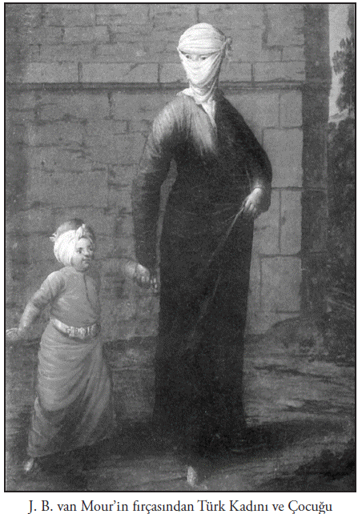
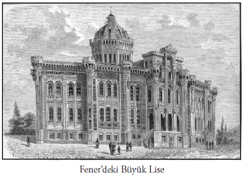
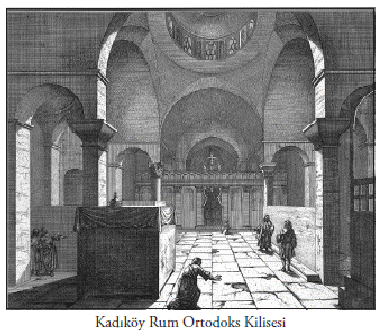
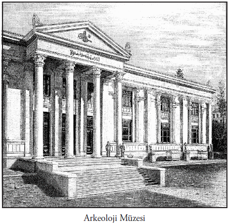

XIV, XV, XVI. asır boyunca kilise, Türklere aleyhinde yoğun bir propaganda yapmıştır. Türkler için korkunç hikâyeler anlatılmıştır. Bunlar matbaa yoluyla, o zamanki tiyatro kanalıyla yayılmıştır. Bugün de benzer önyargılar belli kalıntılarla sürmektedir. Zira toplumların iki asır içinde tarihî doğruları kabul edecek seviyeye geldiklerini söylemek mümkün değildir. Dolayısıyla, bunların bir şekilde devam ettiğini düşünmek zorundayız. Bunu söylemek, ne milliyetçi bir tavırdır ne de yabancı düşmanlığıdır. Bu yüzden, Batılı kaynakları da ustalıkla kullanarak Türk tarihini yeniden yorumlamak gerekmektedir.
Batı, Balkanlar’da başlar. Osmanlı İmparatorluğu Balkanlar’da nasıl bir ilerleme kaydetmiştir? Prof. Dr. Halil İnalcık Hoca, Türkçe ve Osmanlıca kaynakları inceleyerek, tercümeleri yapılmış Bizans ve Slav yorumlarını dikkate alarak bu konuyu ortaya koymuştur. İlerlemede iki neden üzerinde durmalıyız: Başta Osmanlı ordusunun, ateşli silahlar kullanan bir ordu olduğunu kabul etmeliyiz. Bu dönemde Osmanlı ordusu öyle kılıç kalkan ile iş görmekten çok barut kullanır. Erken Rönesans askerî savaş tekniklerine ve ateşli silahlarına sahip, mühendisliği kavramış bir ordu vardır. Osmanlı Türk ordusunun vasfı budur.
İkinci nokta, Osmanlı’nın bir iktisadî-sosyal yapıya sahip olduğudur. Osmanlılık, yerleştiği yerde kendisinden evvelki devletin malî ve içtimaî nizamını toptan değiştirmektedir. Bir kere Balkanlar’da vergileri düşürmüş, angaryayı azaltmıştır. Raiyyet dediğimiz konum ne Stefan Duşan’ın Sırplarıyla, ne Bizans’ın tekfurlarıyla, ne Atina civarındaki Haçlı prensliklerinin yönetim tarzıyla, ne de Dimiter Şişmanov zamanında Tırnova’daki Bulgaristan Çarlığı’nın içtimaî nizamı ile kıyas kabul eder. Osmanlılar döneminde köylüler rahatlamış ve daha az vergi verir hale gelmiştir. Bu bakımdan Osmanlı’dan yana bir üstünlük söz konusudur.
Üçüncüsü, kilise rahat bırakılmıştır. Halil İnalcık Hoca’nın çok etraflı incelemesinde (istimalet sistemi) bunu görüyoruz. Osmanlı, fetihten önce manastırlarla ve kiliselerle adeta bir ön antlaşma yapmış ve bu, kilisenin çok işine gelmiştir. Manastırların vergi imtiyazı aldığını görüyoruz. Bu konuda sayısız ferman ve belge vardır. Dolayısıyla bölgelerde Hıristiyanlık içindeki kavga bitmiştir. Mesela Venedik’in ve Cenova’nın hükmettiği yerlerde, Katoliklerin yerli Ortodokslara yaptıkları zulüm sona ermiştir. Antisemit politikalar son bulmuştur.
Şunu iyi bilmeliyiz: Yahudi düşmanlığı, bizim tarihimize ve medeniyet perspektifimize son derece aykırı bir görüştür. Bu görüşün, Osmanlı ananesiyle bağdaşır yanı yoktur. Osmanlıların Balkanlar’da hâkim olmasıyla, eski kudretli sınıfların iktidarı kaybolmuştur. Burada Roma İmparatorluğu benzeri yeni bir ruh ortaya çıkmıştır; üniversal bir imparatorluk...
Osmanlı’nın ilerlemesi sırasında Balkanlar’da nasıl bir durum vardı?
Buradaki devlet yapıları bizim tasavvur ettiğimiz veya o milletlerin kendi millî tarihlerinde yazıldığı gibi değildir. Bulgar Çarlığı başkenti olan Tırnova çok güzel bir şehir, idarî ve kültürel bir merkezdi. Ancak Bulgaristan parçalanmış, küçük feodal prenslikler arasında kalmıştı. Ziraî alanda tahribat vardı. Sırbistan da farklı değildi. Bugünkü Yunanistan’da sırf Hellenler yaşamıyordu; bazı Arnavut ve Eflaklılar da orada meskun idi. Anlaşılıyor ki burada etnik bir bütünlük yoktu. Bu farklı kültürler de, birbirleriyle ilişki içinde değillerdi, çok kapalı yaşıyorlardı. Mesela burada Türklerden önceki Avrupalı Haçlı hakim zümreler Doğu’daki kültürlere yaklaşmak ve onlarla kaynaşmak gibi bir niyet taşımayan, kaba bir feodal düzen içindeydiler. Oysa Batı Avrupa’da artık teknolojik bir devrim başlamıştı. Tarımda yenilikler, yeni arazilerin ekime açılması gibi şeyler oluyordu.

Burada Haçlılara dönük bir parantez açmak gerekir. Çünkü bu konuda bildiklerimiz tashihe muhtaçtır. Sanıyoruz ki Haçlılar, gittikleri yerlere kültür ve uygarlık taşırlar. Buralara baktığımızda, pek de öyle olmadığı anlaşılır. Çünkü buradaki Haçlıların günlük hayatlarında önemli bir değişiklik olmamıştır. Temizlik alışkanlıkları, mutfak kültürleri değişmemiştir. İsrailli ünlü Ortaçağ tarihçisi Joshua Prawer’in bu konudaki tetkikleri incelendiğinde, bu durumun Antakya veya Mora için de geçerli olduğu görülecektir. Haçlılar gittikleri yerlere bir şeyler götürmekten çok, oralardan çok şeyler almışlar. Yağmalayarak tabii ki… Kültürel kalıplar değişmemiş...
Haçlıların Kudüs’ü ve Şark’ı bırakıp Bizans’a saldırmasına kadar, Ortodoksluk ve Katoliklik arasındaki ayırım ciddi bir mevzu değildir. İki mezhep, sadece teolojik bazı tartışmalar içindedirler ki sokaktaki insanı ilgilendirmeyen bir tartışma ve ayrışmadır bu. Ortodoksluk ve Katoliklik arasındaki asıl ayrım, Haçlıların Bizans’a saldırmasından sonra belirginleşmiştir. Artık kan girmiştir araya. Doğu Ortodoks dünyası, bundan sonra Batı dünyasına iyi bakmaz. Neticede Katoliklik ve Ortodoksluğu bağdaştırmak için, 1430’ların sonunda Floransa’da bir konsil toplanır.
Floransa Konsili’nde Ortodoks âlemini temsil eden Bessarion, son derece kültürlü bir adamdır, birleşmeyi savunmaktadır. Belagati kuvvetli bir adam olan Kardinal Cesarini de bu görüştedir. Rusya’dan gelen Metropolit İzidor da kendilerine katılmıştır. Fakat Doğulular burada alınan kararı tanımazlar. Çünkü onlar için Katolik; “gaddar, kan içici, barbar” insan demektir. İşte Türkler bu durumdan istifade etmeyi bilmişlerdir. Osmanlı, Katoliklere karşı Ortodoksları himayesine almış, Ermeniler ile Rum Kilisesi arasındaki ayrılıktan yararlanmış, Ermenilerden yana tavır izlemiştir. Fatih’in ilk yaptığı iş, İstanbul’da bir Ermeni Patrikliği ihdas etmek olmuştur. Önceleri böyle bir makam yoktur. Osmanlı’da idarî otorite olarak bu patrikliği ihdas eden Fatih’tir. Bundan sonra Osmanlı İmparatorluğu’nda Ermenilerin ruhanî lideri, ama bilhassa milletbaşı (etnark) İstanbul Ermeni Patriki olmuştur.
Vatan bildiğimiz bu toprak parçası, miladi XI. asırdan itibaren Türkleşmiştir. Osmanlı öncesinde buralar Türkiya (Turchia’dan) veya Turcmenia olarak biliniyordu. Yakın Doğu’yu iyi tanıyan, burada ticaret yapan İtalyanlar, Cenevizliler ve Venedikliler topraklarımıza bu adları vermişlerdi. Biz ise, imparatorluk iddia ve hedefini önde tutmamız sebebiyle topraklarımıza Rum ülkesi, Rumî veya Rumeli gibi isimler vermişizdir. (Roma İmparatorluğu)
Topraklarımızı, Osmanlı Devleti’ni ve onun selefi Selçuki İmparatorluğu’nu, daha çok yabancı seyyahların yazdıklarından öğreniyoruz. Bu seyahat notları önemli kaynaklardandır. Seyyahların 1135’ten itibaren sistematik olarak devam eden, Türkiye’ye dair raporlarını bugün Vatikan arşivlerinde bulmak mümkündür. Venedik ve Cenova arşivleri de, bu gibi bilgileri içermektedir. Sadece XIX. yüzyılda, Osmanlı coğrafyasına yapılan gezilerle ilgili seyahatnamelerin adedi 5000’i geçmektedir.
Türkiya üzerine en eski Fransızca-Almanca seyahatnameler, Osmanlı öncesine kadar uzanmaktadır. Bu seyyahlar Bizans İstanbulu’ndan geçmişler; Türklerin elinde olan o zamanki Anadolu’yu da canlı bir biçimde anlatmışlardır. Hatta Hans Schiltberger, eserinde Tatarca, yani Kırım Kazan Çağatay Türkçesiyle dualar kaydetmiştir. Bu çok enteresan bir olgudur. Demek ki misyonerler daha o zamandan Türk halklarına yönelik propaganda metinlerini bu halkların kendi dillerinde hazırlamaktadırlar. Bu Vatikan’ın tarihi ve dünyevi konumunun gücünü gösterir.
İşin daha da ilginci, bu kitapların matbaadan evvel yazılmış ve matbaa icat edilip kullanıma geçmeden çok evvel el yazmasıyla onlarca nüsha olarak etrafa dağılmış olmasıdır. Batı’daki halklar, matbaadan evvel de o kadar okuyor ki Türkiye’yi bile merak ediyor.
Bu zenginliklerin ortasında seyahat felsefesinin ve coğrafya edebiyatının şaheserlerinden bahsedilebilir. XVII. asrın ünlü Fransızı Jean Chardin, Paris’ten Tiflis’e ve Paris’ten İsfahan’a uzanan seyahatnamelerin öncüsüdür. Bu seyahatnamelerde, canlı ve diri bir coğrafya tasvirinin ve çok iyi bilginin yanında bir şeyi daha görüyoruz; Avrupalı artık Şark’a, ‘atıl, değişmeyen, gelişmeyen ülkeler’ diye bakmaya başlamıştır. Asya’da değişmezlik, Avrupa’da ise devamlı değişme vardır. Bu seyahatnamelerde bunu ifade ediyorlar. XVII. asırda, yani Barok aydınlanma çağında artık o doruğa ulaşıldığını Jean Chardin gibi fevkalade bir yazarın kaleminden de gözleyebiliyoruz. Gene aynı şekilde Fransız aydınlanma çağının iki önemli seyyahı, bilhassa Doğu Akdeniz seyahatnamesi yazarı, Voyages de Levant ile İran ve Türkiye’de Altı Seyahat başlığıyla kitaplarını yayımlayan Jean Baptiste Tavernier de bu görüştedir.
Bu iki gezginin notları, sadece verilen bilgi açısından değil; artık Garp’ın Şark’a nasıl bakmaya başladığı, Garp’ın Şark diye bir medeniyet yarattığını göstermesi açısından da önemlidir.
Başka yönlere bakalım. Devlet ve toplumumuz hakkında, bilhassa toplumsal yaşayışımız hakkında çok ilginç bilgiler veren Nicolay de Nicolas, eserinin adını “Navigation into the Turkiya”, yani “Türkiye’ye Deniz Yolculuğu” koymuş. Dikkatinizi çekerim; bugünkü İngilizler gibi “Turkey” diye yazmıyor ve memleketimizi hindiye benzetiyorlar diye komplekse girmemize gerek bırakmıyor, düpedüz “Turkiya” yazıyor.
16. asır sonunda ülkemize gelen Salomon Schweigger, oldukça kapalı bir Protestan papazıdır. Schweigger’in seyahatnamesindeki bilgilerden çok, Şark’a bakışı ilginçtir. Fotoğraf albümü şeklinde basılıp yayımlanan seyahatnamesi dilimize yakın zamanlarda kazandırılmıştır. Daha önce bendeniz seyahatnamenin İstanbul kısmını şerhli olarak yayınlamıştım. Schweigger’in çok ilginç gözlemleri vardır: Topkapı Sarayı’na yaklaşımı, Türk hamamını tasviri ve korku unsuru olarak anlatılan Türk ordusuna bakışı… “Adamlar hamamda bile bir örtü kuşanıyorlar. Ne kadar edepli insanlar. Bu edep ve namusu bu barbarlardan öğrenmemiz lazım.” Büyük mabetler ve kamu eserleri inşa ettiğimizi, ama oturduğumuz evlerin bir şeye benzemediğini düşünür. Schweigger ucu keskin heccav üslubuyla olmadık tezatları gözleyip kaleme almıştır.
Şark’ın seyyahlarına gelirsek, Evliya Çelebi Seyahatnamesi önemli bir Türkoloji kaynağıdır. Çelebi’nin yazdıkları, incelemekle bitmeyecek bir coğrafya ve kültür kaynağıdır. Seyahatname abidevî bir eserdir. Evliya Çelebi gibisi daha evvel ve daha sonra ne bizde çıkmıştır ne de Avrupa’da... O günün hayatı içinde konuşulan dilleri, lehçeleri kaydetmiş gibidir. Çoktan kaybolup gitmiş Kafkas dillerinin bazı izleriyle onun seyahatnamelerinde karşılaşılabilir. Bu yüzden Kafkasyalılar için vazgeçilmez bir kaynak haline gelmiştir. Ama şunu unutmayalım ki Evliya Çelebi’nin de yanıldığı yerler olmuştur.
Evliya Çelebi gibi olmasalar da, bugünlerde ortaya çıkan başka kaynaklar da vardır. Mesela Yirmisekiz Çelebi Mehmet Efendi Seyahatnamesi... Hiç şüphesiz ki Fransız devri dediğimiz, yani XV. Louis’nin çocuk krallığına rastlayan, bu dönemi sadece Yirmisekiz Çelebi Mehmet Efendi’den öğrenecek değiliz. Bu döneme dair kayıtların, resmî-gayriresmî mektupların, kitapların haddi hesabı yok. Bunları yetmiş iki millet incelemiş, çünkü Fransa o zamanlar medeniyetin, Garp medeniyetinin kaynağı. Peki niye bu insanlar, sadece Türkologlar değil Fransız sosyologu da dâhil bütün Avrupalı sosyologlar, tarihçiler, Yirmisekiz Çelebi Mehmet Efendi’nin sefaretname tercümesine saldırıyorlar? Çünkü başka bir göz, başka bir eleştiri, başka türlü bir zihniyete has bir hayranlık söz konusu.
Buradan şu çıkıyor: Herhangi bir medeniyet, geçmişini anlamak için sadece kendi büyükbabalarının tuttuğu notlara ve kanaatlere değil, başkalarının değerlendirmelerine de bakmalıdır. Bunun böyle olduğunu bilmemiz gerekir. Hele Osmanlı medeniyeti ve devleti gibi, çeşitli milletlerin coğrafyası üzerinde kurulmuş, farklı etnik grupları idare etmiş, yeniçağlara hükmetmiş, 6 asır yaşamış bir devletin içtimaî hayatını, ekonomisini ve kültürünü anlamak için çok farklı kaynaklara başvurmak bir mecburiyettir.
XIX. yüzyıl işte bu değişik veçhelerden bakan kaynakların bırakıldığı dönemdir. XIX. yüzyılda Olivier gibi birisi çıkıyor, yukarıda bahsettiğim Yirmisekiz Çelebi Mehmet Efendi gibi birisi çıkıyor, sonraları Texier ve Mordtman çıkıyor. Bunlar artık bu medeniyete, sadece maddî çevreye bakarak değil, kendi önyargılarıyla da yanaşıyorlar. Çok bilgili kişiler oldukları, hatta Türkçe bildikleri için bu önyargıları bir kalemde atamayız; elimizin tersiyle de itemeyiz. Dikkatle anlamak zorundayız. Unutmayalım ki XIX. yüzyılın Türk seyahatnameleri de çok ilginçtir. Mesela Direktör Ali Bey’in “Bağdat’tan Hindistan’a” kadar giderken yazdığı seyahatname son derece ilginçtir. Direktör Ali Bey zamanın Bağdatı’na, ki bu aşağı yukarı Mithat Paşa’nın reformlar yaptığı bir Bağdat’tır, nasıl yaklaşmaktadır, onu nasıl gözlemlemektedir, Hindistan’a nasıl bakmaktadır? Türklerin kaleme aldığı diğer Hindistan seyahatnameleri de böyledir.
Asıl önemlisi, XX. yüzyılın Türk seyyahı, ki başlarında Falih Rıfkı Atay gelir, dış dünyaya nasıl bakmıştır? Balkanlar’a Batı Avrupa’ya, komünist Rusya’ya, faşist İtalya’ya ve o zamanki Britanya Hindistanı’na.
Herhangi bir yerde bir siyasî görüşün, bir dünya görüşünün izlerine rastlamamak mümkün değildir. Seyahatnameler sadece maddî olayları, maddî varlıkları, geçmişi tespit edebileceğimiz kaynaklar değil; fakat tarihçi için anlaşılması en zor alanı anlaşılır kılan kaynaklardır. İnsanların zihniyeti, kafalarının içi, dünyaya ve komşuya bakışları…
Bu bakımdan seyahatnamelerin derhal Türkçeye çevrilmesi, çeviri yoluyla kazanılması gerekmektedir. Oysa bizler bunu yapmak bir yana seyahatname yazan, hem de iyisini yazan kendi ecdadımızınkini eski harflerden yenisine aktaramadık. Bunlar gazetenin, mektubun, resmî evrakın, resmî kayıtların veremediğini verecek kaynaklardır. Bu noktayı unutmamalıyız.
AVRUPA NEDİR, NERELERİ KAPSAR?
Avrupa bir birliktir. Ancak bu birliği bütün Avrupa’nın siyasî-coğrafî sınırlarını kapsayacak şekilde genişletmemek gerekir. Bizim Avrupa Birliği’nden anlayacağımız şey, bugünkü batı ve kuzeybatı Avrupa olmalıdır. Avrupa Birliği her şeyden önce siyasî bir ortaklıktır. Çünkü Roma İmparatorluğu yıkıldıktan hemen sonra bu sahaya yerleşen barbar krallıklarla birlikte burada gevşek bir siyasî birlik ortaya çıkmıştır. Avrupa’nın bundan sonraki siyasî müesseseleri, içtimaî gelişmesi ve hatta hukukî yapısı, bu gevşek yapılı imparatorluğun izleri üzerinde gelişecektir. Hiç şüphe yok ki bugünkü AB; hem ekonomik, hem siyasî, hem de kültürel açıdan en organize, en yaygın, en hâkim dinî kuruluştur. Bunun etrafında bir Avrupa şekillenmiştir.
Bugünkü Avrupa’yı ortaçağlar çıkarmıştır. Gerçi Avrupa kendisinin Romalı ve giderek Hellen olduğunu söylemektedir. Ama Hellenlik ve Romalılık, bugünkü Avrupa’dan çok, belki Akdeniz’in doğusundaki milletleri kapsayan bir medeniyettir. Bu yönüyle Hellenlik ve Romalılık üniversaldır; bir tarafı bir taraftan ayıran unsur değildir. Kaldı ki Hellen uygarlığıyla Avrupa Doğu Akdeniz’e göre daha geç temasa geçmiştir. Hem de 14-15 asır kadar sonra.
Bugünkü Avrupa, IX. asırdan itibaren kendisine Mukaddes Roma diyen Büyük Batı İmparatorluğu’nun ve Katolik Kilisesi’nin elinde biçimlenen bir dünyadır. Ne yazık ki bizim bu dünyaya dair bilgilerimiz noksandır. Bu bilgileri okul düzeyinde öğretmediğimiz için, siyasî karar mekanizmalarında söz sahibi olan kimseler bile Avrupa hakkında yanlış bir kanaate kapılmaktadırlar.
Avrupa bir kontratlar sistemidir
Tarihî Avrupa bir kontratlar, akidler sistemidir. Bütün toplum belirli bir hiyerarşiye bağlıdır; alt-üst ilişkisi, düzgün bir akidle belirlenmiştir. İmparatorun düklerle ve kontlarla bir akdi vardır. İmparator, alttakilerin efendisidir; alttakiler kendisine tabi olur, imparator da onları korumakla, hukuklarına riayet etmekle mükelleftir. Bu hiyerarşik durum en alttaki köy baronlarına, üretimi sağlayan serfe yani köylüye kadar iner. Köylü, efendisine tabidir; arazisini terk edemez, belirli vergileri vermek ve angaryasını yerine getirmekle mükelleftir. Hatta evlilik zamanında ‘gerdek resmi’ ödenir; evlenilecek kızın ilk gecesi senyöre aittir. Bu mutlaka uygulanması gereken bir husus olmasa da böyle bir hukukî durum mevcuttur ve zaman zaman da uygulanmıştır.
Avrupa’da yöneten sınıflar, işi belirli bir hiyerarşi içinde ve irsî olarak götürmektedirler. Halbuki Doğu’da böyle irsî bir durum çok zayıftır; bazı yerlerde var, bazı yerlerde ise yoktur. Mesela Osmanlı İmparatorluğu’nda irsî bir vezir ve sancak beyi sınıfı mevcut değildir. Vilayetleri yöneten büyük beylerbeylerinin ve onların altındaki sancakbeylerinin hâkimiyetlerini irsen götürdükleri söylenemez, bu mümkün değildir.
Bu kontrat sistemi, Avrupa kıtasında çok erkenden bir tür kamusallık, bir amme müessesesi alışkanlığını doğurmuştur. Siyasetin bu sistem içerisinde yürütüldüğü açıktır. Tanrı’nın kurumu sayılan kilise de bu kontratlar sisteminin içindedir. O da belirli kontratlarla siyasî otoritenin dışında kalmayı bilmiştir. Mesela kilisenin içindeki tayinlere siyasî otorite karışmaz. İngiltere’deki en büyük din adamını İngiliz Kralı değil, Roma’daki Papa tayin ederdi. Almanya’nın devletçiklerinin başındaki başpiskoposları ve kardinalleri, Alman hükümdarları veya İmparator değil, Roma’daki Papa tayin ederdi. Macaristan’ın en büyük din adamını ve daha alttakileri, Macar Kralı değil, Roma’daki Papa tayin ederdi. Şüphesiz aralarında istişare olur, mahallî özelliklere ve taleplere kulak verilirdi.
Kilise Batı’da siyasetin öncüsü ve ustası olmuştur. Bu çok açıktır. Bir şehrin yönetiminde din adamları hemşehri sayılmazdı; şehir ahalisinin hemşehri olarak yaptıkları müşterek yemine katılmazlardı. Onların bağlılıkları kilisedeydi. Kilisenin şehir idaresiyle bağlantısı ise yine bir kontrat, bir akid, bir antlaşma konusuydu. Yahudiler hemşehri sayılmazdı, çünkü onların İncil’e göre yemin etmeleri mümkün değildi. Böyle bir şeyi ne onlar kabul ederdi, ne de Hıristiyanlar. Yahudiler sadece bir şehirde oturan insanlardı. Rey hakkı olan, seçen, seçilen hemşehriler değillerdi.
Bu kontratlar sistemiyle Batı Avrupalılar, çok erkenden, hukukî normlar çerçevesinde ilişkiler kurmayı başarmıştır. Bu yüzden de Antik Roma hukukunun müesseselerini alıp geliştirmeyi denemişlerdir. Hukukçuluğun üniversal zamanları, mekânları kapsayan teknikleri ve ilkeleri vardır. Batı Avrupa’nın hukukçuları, bir araya gelip tartışmayı, belirli kurumları, âdetleri ve kuralları birbirlerini referans göstererek geliştirmeyi öğrenmişlerdir. İşte bütün bunların neticesinde Avrupa, diplomasi sanatının doğup geliştiği yer olmuştur. Buna öncülük eden ülke de İtalya’dır. Nitekim İtalya, Doğu ile Batı arasında köprü olmakla birlikte, Avrupa’nın temel kurumlarının kurulmasına ve gelişmesine de öncülük etmiştir.
Evet, diplomasi sanatı Avrupa’nın önemli taraflarından biridir. Filoloji ve müzikte Avrupa, Doğu’nun önündedir ve hâlâ üstünlüğünü korumaktadır. Ama lütfen bu hükmü felsefeye, tıbba, fizik ve eczacılığa, teknik ve matematike, tarih ve coğrafya gibi dallara yaymayalım.
Avrupa kıtasına dair yanlışlarımız
Bizim Avrupa kıtası etrafında geliştirdiğimiz yanlışlar vardır. Evvelen; Protestanlığın “dinde reform” olduğunu düşünürüz. Bu reformla Avrupa’nın lâikleştiğini, Batı düşüncesinin yine bu reform sayesinde dinî kurumu tenkit ettiğini ve kendisini ondan kurtardığını ileri süreriz.
Gerçekten böyle midir?
Batı Avrupa’da din savaşları vardır. Avrupa kanlı bir bedel ödeyerek dini ve kiliseyi siyasetten uzaklaştırmıştır. Bu hiç de kolay olmamıştır. Dinin ve kilisenin siyasetten uzaklaştırılması durumunu lâikliğin temeli olarak görmek ne kadar doğrudur, bilemiyoruz. Protestanlığın çok liberal olduğu ve lâik düşünceyi getirdiği şeklinde yorumlar yapılmaktadır. Hatta Luther’in İncil’i çevirerek bir çığır açtığı söylenmektedir. Oysa İncil’i millî dile çeviren Luther değildir. Luther’den evvel de bu yapılmıştır. Luther, bunu yapanlardan biridir sadece. Evet, Luther İncil’i Alman diline çevirmiştir. Dili çok iyi kullanarak ve bunu Almanlar arasında yaygın olan bir lehçe ile yaparak dilin gelişmesine yardım etmesi de çok önemlidir. Ama İncil o dönemlerde Finceye, İsveççeye, Fransızcaya da çevrilmiştir.
İncil’in asıl eski İbranî, Aramî metinlerinin Yunanca-Latince çevirisini yapan (tenkitli metin biliminin ölçülerini ve filolojik yöntemleri kullanarak, önce metni düzeltip sonra millî bir dile çeviren) kişi Rotterdamlı Erasmus’tur. Erasmus, Rönesans Avrupası’nın ilk büyük entelektüel portresidir. Mesela Avrupalılar Erasmus’tan evvel, Musa’yı başında boynuzlarla tahayyül ederlerdi. Çünkü Musa’nın Tur-ı Sina’dan inişi, yanlış bir İbranca okuması ile değerlendirilirdi. Bu yanlış okuma sebebiyle “ker’en” sözü “karen” yani ‘nur’ ‘boynuz’ olurdu. Michelangelo’nun ünlü heykelinde, elinde On Emir’i tutan Musa peygamberin başında iki küçük boynuz vardır. Bu, metnin yanlış okunmasıyla ilgili popüler bir örnektir.
Demek ki Protestanlık, Avrupa’nın hayatında siyasî mekanizmalara ve siyasî parçalanmalara tekabül eden yeni bir yorumdur. Bu Luther’le başlamış bir hareket de değildir. Kendisinden iki asır kadar önce Jan Hus, Bohemyalı ünlü reformatör, aynı şeyi yapmaya teşebbüs etmiş ama muvaffak olamamıştır. Çekya, Protestanlığın öncüsü olacakken Katolik bir ülke olarak kalmıştır.
Bu hareketlerin ve kavgaların etrafında gelişen Avrupa, siyasal bakımdan ne kadar çekişmeli ise, kendi içinde de o kadar gelişen bir kıtadır. Avrupa çok ilginç bir şekilde, medeniyetin referansları bakımından bir merkez olmaktadır. Bir adam İngiltere’den Floransa’ya kadar aynı dili konuşarak seyahat edebilmekteydi. Tabii sadece Latince bilenlere rastlamak şartıyla...
Geç ortaçağda aydınlar, yeşermeye başlayan Yunan kültürünün ortak paydaları etrafında ortak bir dil geliştirmişlerdir. Avrupalılar giyimde, eğlencede, ikili ilişkilerde ortak bir tarzın etrafında toplanmaktadırlar. Aynı ressamları seyretmekte ve onlardan hoşlanmakta, aynı müziği dinlemektedirler. Hangi ülkeden olurlarsa olsunlar, sonuçta kilise gibi birleştirici bir kurum etrafında toplanmaktadırlar.
Avrupa işte bu kurumlarıyla Avrupa olmuştur. Bu durumun kıtanın tamamını kapsamadığı açıktır. Mesela Balkanlar ve Rusya bunun dışındadır. Rusya ancak XVIII. yüzyıldan sonra bu atmosferin içine girmeye çalışmıştır ki Rus Batılılaşması, Türk Batılılaşmasına göre daha erken, daha yoğun ve yaygındır. Ama bir yerde, yine de bizim gibi Batılılaşan bir ülkedir Rusya; başından beri Avrupalılığın içinde değildir. Sonradan Avrupa’nın içinde yer almaya çalışmıştır. Çalışmıştır da ne olmuştur? Bazı yerlerde boynuz kulağı geçmiştir. Gelin görün ki kulağı geçen bu boynuzu, Avrupa hâlâ kendinden addetmemektedir. Mesela IV. Henry’nin nazırlarının büyük ideali, Osmanlı İmparatorluğu ile Rusya’yı Avrupa milletler topluluğuna dâhil etmemektir. Aristokrat ve idareci sınıftaki bu eğilim halkta da vardır. XVIII. yüzyılda Avusturya’da resimli bir halk işi tabloda milletler yer alıp sıralanıyor. Burada istenmeyenlerin başında Türk ve Grek bir arada zikredilmektedir. Sonra da “Moskovith” diye Rus yer almaktadır. Bunların dinleri bile birbirine benzer görülmekte, bu halklar adeta aforoz edilmektedir. İşte bu Avrupa, muhtelif yaklaşımlara rağmen Türk unsuruyla bağdaşmakta büyük zorluklar çekmektedir.
Avrupa ideali ne 1960’larda doğmuştur, ne de General de Gaulle ve Adenauer bu işin öncüleridir. Hitler, Pétain ve Fransa’nın diğer politikacıları daha önceleri bu ideal için birlikte çalışmışlardır. Bu durum, anti-semitizm, anti-komünizm ve anti-sosyalizmde birleşen bir diktatoryayı doğuran bir rejim olarak anılarda kalsa da, Fransa-Almanya ittifakına ve Avrupa’nın kuruluşuna sebep olmuştur.
“Çok partili rejimler, Avrupa’nın geliştirdiği bir şeydir” diyemeyiz. Çünkü karşımızda Avrupa’yı bir baştan bir başa istila eden bir Napoleon vardır. Kurduğu Avrupa, Campo Formio Antlaşması’nın Avrupasıdır, Austerlitz’deki savaşla kurulan Avrupadır. Burada eski Avrupa’nın bazı unsurları tarihe karışmaktadır. Ayrıca Napoleon’un iddialarına ve ideallerine karşı çıkan Avrupalılar, 1815’te, Viyana Kongresi’nde yeniden bir Avrupa kurmak istemişler fakat başaramamışlardır. Çünkü bu Avrupa’ya da tepkiler başlamıştır. Nihayet 1856’da Paris Konvansiyonu’ndaki Avrupa’nın içinde, Osmanlı İmparatorluğu tam üye ve büyük devlet olarak yer almaktadır.
Avrupa Birliği, Fransa’nın millî kahramanı General de Gaulle’ün önderliğinde dünyaya gelmiştir. Gerçi onun zamanında bu birlik henüz sadece iktisadî bir bütünleşme hedefi etrafında oluşmaktaydı. Kendisine tabi olan Federal Şansölye Adenauer bugünkü birleşik Almanya’yı bile hayal etmiyordu, etmeye de niyeti yoktu. Onun Federal Almanyası için komünizmin ve ona bulaşan Doğu Almanya’nın mümkün mertebe kapı dışında kalmasında hiçbir mahzur yoktu.
Mareşal de Gaulle eski bir Fransızdı. Derin tecrübesi ve önsezisinden dolayı mağrur olmaktan çok vakurdu. Fransa’nın gururlanacak hali kalmadığının farkındaydı; ama büyük Fransız ulusu(!), tarihî mirasını muhafaza etmeli ve vekarına sahip olmalıydı. Kıta Avrupası’nı İngiltere’nin şerrinden korumak için illa Mareşal Pétain’in yoluna, yani Nazi düşmanla işbirliğine gitmeye ihtiyaç yoktu. Mağlup ama zengin, muhafazakâr demokrat Almanya ile yeni Avrupa pekâlâ inşa edilebilirdi. Onların yeniden kuracağı Charlemagne Avrupası’na, yanı başlarındaki Benelux denen Belçika, Hollanda, Lüksemburg; ayrıca güneyi o tarihte çok fakir olsa da (bugün de pek matah değil) kuzey canibi zengin ve endüstriyel İtalya da bu ittifaka dâhil olmalıydı.
Avrupa buydu. Almanya, İngiltere’yi istese de, de Gaulle Fransası buna şiddetle direndi. Bugünkü kalabalık Avrupa’yı ne Fransa ne Almanya isterdi. Onlar için Portekiz, İspanya, Yunanistan söz konusu olamazdı; velev ki komünizmin yıkılacağı tutsa da Macarlar, hele Polonezler gibi sözü sohbeti, çalgısı çengisi hoş ama agrar (tarımsal) milletlerin böyle birliklere alınması düşünülemezdi bile... Çeklerin eskimiş sanayii de kimseyi alakadar etmezdi. Almanların kardeş Avusturya’ya dahi sıcak bakmaları için 1970’lerin başına kadar beklemek gerekti. Avusturya o zaman verimli bir ortak sayılmazdı. Bugün de ihtiyar bir ülkedir ama zaten 1970’lerin sonunda iktisaden Almanya’nın bir parçasıydı.
Bugünkü geniş Avrupa’yı yaratan saikler muhteliftir. Genç nüfus isteyenler (Gerçi artık Avrupa’nın hiçbir bölgesinde genç nüfus kalmadı) veya sosyalist eğilimleri dolayısıyla güneyli ve doğulu kardeşlerini aralarında görmeyi dileyenler veya eski Britanya Dışişleri Bakanı Lord Owen’ın söylediği gibi “kendilerine ahlakî borç duyulan büyük Avrupa’nın parçaları”nı, yani Çekya’yı, Polonya’yı, Macaristan’ı yanlarında isteyen birtakım romantik görünümlü ve yanlış hesaplı Avrupa siyasîleri, bu bölgelere yönelmenin sebebidir.
Kısacası, şunun üzerinde durmamız gerekmektedir: Avrupa Birliği Rönesans’tan beri değişen bir idealdir. Bu birliğin kültürel temelleri vardır. Bu yönüyle, iktisadî yapısından daha sağlamdır. İçerdiği unsurlarla birlikte bu birlik, bugünkü Avrupa kıtasının tümünü kapsamamaktadır. Bunun üzerinde durmamız gerekir.
Şimdi bütün bu açıklamalardan sonra şöyle bir soru sorulabilir: Avrupa nedir? Nereleri kapsar? Cevabını sarahaten bilen var mı?
ROMALILIK, TÜRKİYELİLİK, OSMANLILIK
Eskilerin Türkiya diye telaffuz ettikleri vatanımızın isim babaları, bir bakıma ortaçağların becerikli, gözlemi kuvvetli, dünyayı tanıyan İtalyan tüccar cumhuriyetleri olduğunu belirttik. 12. yüzyılda Küçük Asya’daki yerleşimleri dört köşeyi kaplayan dedelerimizin Türkçesi, bu kıtada yaşayan başka kavimlerin ortak anlaşma dili haline geldiğinden; Cenovalı, Venedikli tüccarlar ve diplomatlar ülkemize Turchia veya Turcmenia dediler. Bizim dedelerimiz o zaman Roma İmparatorluğu’nun varisi olma iddiasındaydılar ve Bizanslıların kendilerine Romalı demesi gibi, Romalı anlamında Rumi kelimesini kullandılar. Bu isim zamanla tutundu, büyük adamlara bu unvan veriliyordu. Belh’ten gelmesine rağmen Mevlana Celaleddin hazretlerine Rumi denmesi gibi, bu topraklara hükmeden hanedana da Roma (Rum) Selçukluları denirdi.
Romalılık modern çağlarda yaşaması mümkün olmayan bir emperyal kavramdır. Bahsettiğimiz dönemlerde kiliseye dahi Roma, yani Rum-Ortodoks kilisesi denilirdi. Bugün Batılılar bu kelimeyi Hellen Ortodoks anlamında Grek Ortodoks diye yanlış kullanıyorlar; kilise de Romalılık kavramının zaten bütün dünyayı kapsadığını unutmuş, “okumenik” kavramı peşinde koşuyor.
Romalılık bütün dinlere ve dillere mensup olanları bir çatıda toplardı. Modern zamanlarda bunu yaşatmak mümkün değildir. Söğüt’te teşekkül eden beylik kısa zamanda cihanşümul oldu, ama bütün İslam devletleri gibi hanedanın ismini taşıdı. Geçmiş asırlarda “Osmanlı” hanedanın ve ona mensup olan devletlilerin adıydı; bir halkın kimliği olarak kullanılmadı. Osmanlılığın emperyal bir kimlik haline dönüşmesi, 19. yüzyılın ulusalcı Avrupası’nı gözleyen ve göğüsleyen Babıâli yöneticilerinin icadıdır. Kavram, bütün milletleri, çeşitli dinden ve dilden bütün kavimleri kapsar gibiyse de imparatorluğun tebaasını yeterince kucaklayamadı ve Osmanlılık bir Rum milletvekilinin tarifiyle; “Osmanlı Bankası ne kadar Osmanlı ise o kadar Osmanlı” olarak eridi, Türk halkı arasında ve Avrupa edebiyatında yaşadı. Ne var ki Cumhuriyet’i kuranlar da Türk deyimini hiç değilse başlangıçta Osmanlı kadar geniş tutmuşlardır, kavramın 1924 anayasasındaki kullanılışı bu genişlik içindedir.
19. yüzyılda imparatorluk tebaasından herhangi birinin “Biz Osmanlıyız” demesi veya bürokrasinin Osmanlı pasaportundan söz etmesi emperyal bir tutumdu. Gerçi, Avrupalıların Türk İmparatorluğu demesi gibi bazı ahvalde Rodoplar’daki Bulgarlar da Türk İmparatorluğu’ndan ve Türkiye’den söz ederlerdi. Ama bu “Osmanlılık” umumî bir deyimdi, o dahi tutunamadı.
Avrupa’da coğrafyaya göre isimlendirilen ülke pek azdır. Büyük Britanya ve artık resmen kullanılsa da pek sevilmeyen “British” terimi böyledir. Son kalıntı Avusturya’dır, Österreich; doğu devleti demek olan bu ülkenin sakinlerine de Österreicher, Avusturyalı adı verilmiştir. Avusturyalılık bir ara Almanları, Trieste İtalyanlarını, bazı Çekleri içeren ve sevilen bir isim olduysa da sonunda onlar da herkes gibi bu unvana isyan ettiler. Bugün Avusturya ismi ihtiyar halkın yorgunluğundan, dolu kasalarından ve Avusturya’da artık Alman’dan başka kayda değer bir halk grubunun olmamasından dolayı yaşıyor.
Bir müddettir gazete sütunlarında Fransa, İtalya, Almanya gibi tabirlerin böyle olduğundan söz ediliyor. Hatta bence ansiklopedi ve sözlüklerde çok açık anlatıldığı halde, yanıltma yoluna sapılarak bu isimleri coğrafyayla aynîleştirip etnik kimliği pas geçme eğilimi var. Avrupa kıtasında İspanya gibi, iki küçük azınlık grubunu tanıdığı halde kendileri Endülüslü, Aragonlu veya Kastilyalı olan etnik İspanyolların bu etnik ismini ayrı dil konuşan Katalan ve Basklara da örtüştüren bir devlet vardır. Gene Bröton, Bask ve Korsikalı gibi ayrı dil sahibi azınlıklarına aldırmadan kendi tarihî ismini kullanan Fransa da onun yanı başındadır. Bu tarihtir ve bu ülkelerin geldikleri nokta onlara başka bir seçim bırakmamaktadır.
Türkiye tabiri hâkim etnik gruba göre, ülkemize başkalarının verdiği bir isimdir. Şimdi bir de Türkiyeli tabiri yaratmanın mantıkla bağdaşır bir yanı olamaz. Kaldı ki, bu gibi mantık çıkmazlarını önlemenin önemli bir yolu tercüme etmekten geçer. Bir çevirin bakalım, Türkiyeli’yi hangi gümrükten nasıl çevirip geçeceğiz? Size kimlik soruyorlar, kimliğinizi açık söyleyin. Türkiyeli bir üst kimlik olamaz. Başkaları da başka bir kelimeyi üst kimlik olarak kullanmaya kalkarsa ne dersiniz?
Terimlerin nasıl oluştuğunu bilmek için çocukların lego oyunu gibi zihinsel idman yapmak yetmez. Kelimelerin arkasında uzun bir tarih, beklenmedik metaforlar ve değişimler yatar. Filoloji ve tarih bilgisinden yoksun olarak, masa başında ortaya konan bazı terimlerin hiç kimseye bir ufuk açacağına inanmıyoruz. Zaten işin garibi, kimse de bazı gayretkeşlerden bu gibi zihin oyunları istemiyor. Türk aydınları, ta Ziya Gökalp’ten beri, üstünkörü sözlüklere bakarak ortalığa kendilerince büyük ve ufuk açıcı kavramlar atmakla meşguldür. Hepsi biraz ortalığı karıştırır, sonra da unutulur gider.
Birileri diyor ki: “Amerikalı oluyor da Türkiyeli niye olmasın?” Şüphesiz ikisine de göçmenler gelmiş, ama birine silahlı kafilelerle; öbürüne ise bavulu, vapur bileti ve özgür iradesiyle. Birinin adı Christophe Colomb’un farkına varmadığı bir bilinmezi, yeni kıtayı bilinir kıldığı için ismi verilen Cenovalı bir kaptandan, Amerigo Vespucci’den geliyor. Diğerininki ise XII. asırdan.
Sorsanız iyice okumuş yazmışların dışında sokaktaki Amerikalıların çoğu bile Vespucci’yi bilmez. Hiçbir kavimle, hiçbir dil ve dinle alakası kurulmayan bir âdem ismi, yeni keşfedilen kozmopolit bir kıtaya verilmiş. Öte yanda ise Küçük Asya’nın XII. asırdan bu yana gelen adı var. Bu adın anlamıyla ve bunun o ülke üzerindeki tarihî oluşumuyla “Amerikalı” tabiri arasından paralellik kurabilmek için ancak bizim memlekette sözde tarih ve coğrafya okumuş olup, gerçeklerden bihaber olmak lazımdır.
Kimileri, tarihin oluşumunda savaşların ve antlaşmaların önemli olmadığını söyler. Tarihin; sanatın, ekonominin, felsefenin ve bilimin izahına dayandığını iddia ederler. Bu boş bir yorum değildir, saygıya değerdir ve reddi de mümkün değildir. Ancak antlaşmaları ve savaşları da görmezlikten gelemeyiz. Zira bazı antlaşmalar ulusları oluşturur.
Mesela Ahıska (Meshet) Türkleri’nden bahsedip duruyoruz. Bunlar Eski Sovyetler Birliği’nin muhtelif yerlerine sürülmüş ve şimdiki Türk Cumhuriyetlerinde sorun haline gelmişlerdir. Niçin? Seksen sene evvel Doğu sınırımız 50 km daha doğudan geçseydi, bugün bu sorun olmayacaktı. Oysa sınır, evin ortasından geçti; mutfak ve oturma odası bir tarafta kaldı, yatak odası diğer tarafta… Bu durum, ekonomik ve kültürel gelişmelerle oluşmadı, bu sınırları çizen şey savaş idi. Evet, o sınır 50 km daha doğudan geçseydi bugün Ahıska (Mesket) Türkleri gibi sorunlarla uğraşmayacaktık. Oysa bugünkü Türkiye için bu bir dış sorun konusudur. Demek ki bu tamamen tarihin bir ürünüdür.
Yine Ukrayna diye bir millet, bir etnik grup vardır; onlar da bir dile, edebiyata ve dine sahiptirler. Ukrayna, evvelce bir siyasî oluşum değildi, oysa bugün Ukrayna diye bağımsız bir devletten bahsediyoruz. İşte bu kimliği besleyen ve oluşturan en önemli unsur, siyasî tarihin kendisidir. Harplerle ve barış antlaşmalarıyla sınırları tespit edilmiş bir ülkedir burası. Demek ki siyasî tarih, savaşların tarihinin önemli bir safhasıdır. Bu sebeple, Osmanlı tarihini ele aldığımızda, tarih bilinci diye bir şeyden bahsedildiğinde, bütün savaşlarıyla, antlaşmalarıyla ve barışlarıyla tarihi bir bütün olarak bilmemiz lazımdır.
Osmanlı tarihyazımı, ne yazık ki, başarılı bir yazım değildir. Oysa Osmanlı Türklerinin muhteşem bir tarihi vardır, Avrupa Tarihi’nin oluşumunda vazgeçilmez bir parçadırlar. Bunun içindir ki, Avrupa milletlerinin %80’i bugün Osmanlı tarihini ciddi bir şekilde etüt etmektedir. Bütün Balkanlar ve Orta Avrupa ülkeleri için böyle olduğu gibi, doğrudan Osmanlı hâkimiyetine girmemiş komşu ülkeler için de bu böyledir. Mesela Avusturya, İtalya ve Polonya da bu tarihin bir parçasıdır. Çünkü tarihleri boyunca, bütün askerî ve dış politikaları ve medeniyetleri bununla temas ederek şekillenmiştir. Durum böyleyken, başkaları Osmanlı tarihini sağlıklı bir şekilde okurken, biz bunu yapmamakta, kendi tarihimizi çalışmamaktayız. Bizde iyi bir Osmanlı tarihi yazılmamış, büyük sentezler ortaya konulmamıştır. Bu olmadığı gibi, halka indirgenmiş, vülgarize edilmiş bir tarihyazımı da yoktur. Mesela okul kitaplarındaki tarih, ihtiyacı karşılamaktan uzaktır. Oysa keyfiyet bütün uluslar için geçerlidir; tarih ancak okullarda öğrenilebilir.
Büyük Osmanlı tarihçileri kimlerdir? Bizim ilk büyük tarihçimiz, şüphesiz ki Ahmet Cevdet Paşa’dır. XIX. asır Türkiye’sinin, Türk edebiyatı ve hukukçuluğunun dehasıdır Ahmet Cevdet Paşa. 12 ciltlik Tarih-i Cevdet, itiraf etmeliyim, bugünkü Türkçe Latin harflerine doğru dürüst çevrilememiştir. Yüz sene evvel hayatımızın içinde olan bir dil ile yazılmış bu eseri bugün anlayamıyoruz. Çünkü o dil bize çok ağdalı geliyor. O dilde yazılmış eserleri bugünkü dile sağlıklı bir şekilde çeviren bir yazarımız da yok. Yakın sayılan bir zamanda yaşamış ve yazmış Fuat Köprülü’yü bile okuyamıyor, dolayısıyla tanımıyoruz. Onun eski risalelerde ve gazete sayfalarında kalmış nice makaleleri var ki, bunları derlemiş değiliz. Daha ilginci, tamamen yeni harflerle yazmış rahmetli Ömer Lütfi Barkan’ı bile tam anlamıyla bilmiyoruz. Halbuki bunlar, üslupları ve metotları itibarıyla modern Türk tarihçiliğinin öncüleridir.
Türkiye, tarih okumuyor. Yazılan tarih sentezlerini halka mal edilecek şekilde yeni bir üslupla kaleme alamıyoruz. Biz çocuklarına ve gençlerine bir şey veremeyen nesilleriz. Kendimizden öncekilerden ne aldığımız tartışılabilir, ancak şu bir gerçek ki bizden sonrakilere de biz bir şeyler veremiyoruz. Oysa mazisini bilmeyen bir toplumun geleceğini inşa etmesi düşünülemez.
Israrla geçmişe mesafeli duruyoruz, tarihimizi bir dönemden sonra başlatıyoruz ki bu hiç doğru değildir. Hiçbir toplumun, pasta dilimler gibi, zamanı bir yerden bıçakla kesme lüksü yoktur. Fransa tarihinin büyük düşünürlerinden biri, Alexis de Tocqueville; “Eski Rejim ve Devrim” [l’Ancien Régime et la Revolution] adlı eserinde Fransız İhtilali’nin, Fransız idare sistemi ve bürokrasisinde yeni bir şey yaratmadığını, hiçbir önemli yenilik getirmediğini, eskinin ve sistemin devamı olduğunu ifade etmektedir. Doğrusu da budur. Napoleon’un yaptığı reformlar bile, XIV, XV, XVI. Louis devirlerindeki reformların bir uzantısıdır.
Bu bakımdan mevcut bünyeyi ve mekanizmayı anlamak için, tarihi çok iyi bilmek, hukuk ve idare tarihinin esaslarını anlamak durumundayız. Bu temel bir unsurdur. Hiçbir unsur tek başına dünyayı ve toplumu yeniden oluşturamaz. Bu, mümkün değildir. Toplum devamlı üreyen, ölen, nesilden nesile birtakım şeyleri miras bırakan büyük bir organizmadır. Sonuç olarak, Türkiye de, Osmanlı mirasını sürdürmektedir ki Türk tarihi, bir anlamda Osmanlı devlet tarihidir. Bu takdirde şunu söylemek gerekiyor: Türkçe yazılı Türk tarihi içinde, Osmanlı tarihi ve Osmanlı devlet yapısı bir zirveyi ifade eder. Bütün o Osmanlı öncesi asırlar, adeta Osmanlı İmparatorluğu’nu ve Osmanlı medeniyetini inşa etmek için gayret göstermişlerdir. Böylesi bir tarihsel ustalık, bir değer söz konusudur. Türkiye Cumhuriyeti bu değerin devamı bir devlettir.
Bu şu anlama geliyor: Osmanlı Devleti’nin mirası her anlamıyla Türklere yüklenmiştir. Ordumuzla, bürokrasimizle, hatta borçlarımızla Osmanlı’nın devamıyız. Bilindiği gibi, Türkiye Cumhuriyeti ilan edildiğinde Osmanlı’nın borçları inkâr edilmemiştir. Türkiye, Rusya gibi yapmamıştır. Onlar “Çarın borcu bizi ilgilendirmez” demişlerdir. O zamanki fakir Türkiye, tahıl ülkesi Türkiye ise Osmanlı’nın borçlarını yüklenmiştir. Hukukî halefiyet ve ulusal ahlâk bunu gerektirir.
Genellikle Doğu–Batı ayrımı, çağdaş düşüncenin, XIX. ve XX. yüzyıl düşüncesinin temel eksenidir. Bu karşıtlık, sadece toplumların kültürel anlayışlarını değil, siyaseti de etkilemiştir. Medeniyet tarihine dayanılarak ortaya konan bu ayrım, hem kafaları hem de sokağı şekillendirmiştir. İnsanlar tarihten ve coğrafyadan bir şey anlamadan, çok da fazla düşünmeden yazmakta, politika yapmakta, hatta işi sokak kavgasına kadar götürebilmektedirler.
Doğu nedir? Batı nedir?
Batı medeniyeti, Hellen-Hıristiyan bir uygarlıktır deniyor. Hıristiyan uygarlık dediğimiz şey, aslında Doğulu tek tanrılı semavî dinlerin bir devamıdır. Hıristiyanlık ise, özde Yahudiliğe yaslanır; Yahudiliğin beynelmilelleşmiş bir boyutudur ve inananları için son vahiy, son risalettir. İslam da aynı kaynaktan devam etmektedir. İslam şeriatı, kendinden evvelki dinleri ve şeriatları tanımaktadır. Eğer mesele Hellenizm, Yunan felsefesi ve bilimi ise; bugünkü Ortadoğu, yani Akdeniz’in doğusu, Kuzeydoğu Avrupa’dan çok daha evvel Hellen medeniyetiyle, yani Yunan felsefesiyle tanışmıştır. Ortadoğu’da Yunancadan çeviriler yapıldığında, yani Yunan siyasî düşüncesi ve biliminin nakli tamamladığında, henüz Güneybatı Avrupa’da böyle bir süreç ve emare görülmemektedir.
Hellenizasyon, havalideki bütün milletleri kapsayan bir süreçtir. Hellenizasyon ve Yunanlılık, kendi başına orijinal bir yaklaşım değildir. Yunan bilimi, geometrisi, düşüncesi, hatta dini ve mitolojisi, Doğu’daki din ve uygarlıklardan kaynaklanmaktadır ve hiç şüphesiz ki, Doğu’da farklı bir bilim ve dünya görüşünün olduğu düşüncesi de bir Batı efsanesidir. Sanılır ki Doğu, bilimsel düşünceye sahip değildir; o, kendinden evvelkileri tekrarlar. Doğu metafizik safhadayken, Batı ilmî safhadadır.
Tam da burada bir hatırayı nakletmek gerek: 1910’larda Darü’l-Fünun’dan bir tabip heyeti Almanya’ya geziye davet edilmiştir. İçlerindeki hocalardan Hulki Bey hatıratında anlatıyor; heyet Robert Koch Enstitüsü’nü gezerken oradaki laboratuarları, hasta bakımını, çalışma yöntemlerini takdirle, hatta hayranlıkla izlemektedir. Bu hayranlık içinde Almanlara bazı sorular yöneltirler. Alman meslektaşları bu sorular karşısında hayret ve şaşkınlık içinde kalırlar. Meğerse onlar, Osmanlı başkentinden gelen üniversiteli meslektaşlarının başka türlü bir anlayışla, büyücü tarzı bir hekimlikle uğraştıklarını zannediyorlarmış. Tıpkı Fransızların o devirde le Toubibe diye adlandırdıkları bir büyücü hekim gibi. İstanbul’dan gelen hekimlerin sordukları sualler, aradıkları şeyler, dikkatlerini yönelttikleri noktalar, onları çok şaşırtmış.
Dememiz şu ki Batı, henüz Akdeniz’in doğusunu iyi tanımamaktadır. İranlı ve Hintli entelektüellerin uğraşları, Türklerin uzmanlık alanlarında ortaya koydukları performans, Batı Avrupa’nın yabancı kaldığı bir durumdur. Bunda belki birtakım siyasî anlaşmazlıkların, diplomatik gerilimlerin de etkisi vardır. Ama bu durum daha çok, Avrupa kültürel kimliğinin kendini olduğundan fazla abartmasından doğuyor. Zira Doğu’da oluşan uygarlık, Avrupa’ya göre geç devirlerde meydana gelmiştir. Avrupa’daki hızlı gelişme, Avrupa’nın kendini yüceltmesini ortaya çıkarmıştır. Avrupa, zihinlerde, merkezî bir ülke ve medeniyet olarak yer alır. Bu, haritalarında dahi böyle okunur. Avrupa, düşüncenin ve bilimin geliştiği, üzerinde ilerlemenin sağlandığı bir kıtadır. Mousnier’nin Fransız Akademisi adına yaptığı meşhur açıklama bunu göstermektedir: “Avrupa hep değişir. Dünyanın diğer bölümlerinde ise atalet ve durgunluk vardır.” Seyyah Chardin de bunu söyler: “Asya atalet, Avrupa ise değişme demektir.” 19. yüzyılın İngiliz şairi Lord Alfred Tennyson ise şöyle der: “Çin’in 500 yılından ise, Avrupa’nın 50 yılı daha ilginçtir.”
Roma Sonrası Avrupa
Oysa Avrupa dediğimiz kıta; milad senelerinde, henüz tarihi tayin eden, tarihin gelişmesinde, beşeriyetin ilerlemesinde ve hareketliliğinde rolü olan bir kıta değildir. Bu kıtayı tarihe ve insanlığın bilincine açanlar Romalılardır. Zira önceleri buralar her türlü adaletsizliğin ve kapkaçın yürüdüğü bir kıtaydı. Güçlü kabile, diğerini son ferdine kadar ya öldürüyor ya da köle gibi topraklarında çalıştırıyordu. Julius Caesar, Galya’nın fethinden evvel buralara geldiğinde, bugünkü Almanya topraklarında Suebler, Galya topraklarında yaşayanlar ve Sekuanlar vardı. O sırada kabileler arasında çatışma başlıyor. Daha güçlü olan kabile diğerlerini toprak esiri olarak çalıştırıyor, bu duruma itiraz ediliyor, nihayet Romalılardan yardım isteniyor. Bunun üzerine Roma duruma müdahale ediyor, orada kendi imparatorluk düzenini ve adaletini kuruyor. Bu kıtadaki insanlar ancak Julius Caesar’ın Galya Savaşı’yla birlikte tarihe takdim edilebiliyorlar. Daha önceleri, kendilerini beşerî mirasa katacak yazılı bir edebiyattan ve tarihçilikten mahrumlar.
İnsanlık tarihine katkıda bulunan öncüler
Yeryüzünde kavimler iki kategoride yer alır. Bir tanesi tarihe, beşerî mirasa kendi çabaları ve ürettikleriyle çok önceden katılanlar; mesela Çinliler, İranlılar, Hintliler, Mısırlılar, Mezopotamya’dan Kaldeli, Asuri ve İbraniler ve Yunanlılar, insanlık tarihine katkı yapan öncülerdir. İkinci kategoride yer alanlar ise, bu sürece daha sonra katılmışlardır, ki bunlar genellikle Avrupa milletleridir. İnsanlık tarihine daha erken katılanlar arasında Türkler de vardır. VII. asırdaki yazılı kaynaklarımız bizlere daha öncelerini gösteriyor. Göktürk yazıtlarında, tarihe adım atan, yani kendini tanıyan bilinçli bir toplumdan açıkça söz ediliyor. Bundan evvel de, bazı kavimlerin yazıtlarında tarihe kendi dilimizle ve varlığımızla katıldığımızdan bahsediliyor.
Çinlilerin, Hintlilerin, daha sonra İranlıların, Bizans dediğimiz Yunan ve Roma mirasının hakkımızdaki kayıtları ortadır. Bunları incelememiz, maalesef kuzeybatı Avrupalıların kendileri hakkındaki Latince kaynakları incelemeleri kadar sarih, kesin ve kolay olmuyor. Bu filolojik metinlerin incelenmesi pek kolay değil. Ama bu bir şekilde yapılmıştır ve bunu yapanlar da, XVII. yüzyıldan beri yine Batılılar olmuştur. Türkler hakkında; Çince, Hintçe ve Pahlavi denen eski İran kaynaklarında bilgi vardır. Filoloji ve tarih alanında ortaya konulan düşük icraat ise, Türk milletinin büyük noksanlarından biridir. Oysa Türkler tarih yapan uluslardan biridir. Yerkürede Türklerin adının geçmediği hemen hemen hiçbir kompartıman yoktur. Almanya, Fransa, İspanya, özellikle Orta Avrupa, Rusya ve Ortadoğu tarihini Türksüz okumak mümkün değildir. Bununla birlikte, tarih yapımında bu kadar aktif olan bir ulus, tarihçilik alanında emeklemektedir.
Avrupa kimliği, olandan daha özgün, daha sanal, daha farazi bir şekilde ayrımlanmıştır. Tarihi bilgiler ışığında, Doğu Akdeniz’i veya Ortadoğu’daki medeniyeti Batı’dan ayırmak veya Batı’yı buralardan bağımsız düşünmek mümkün değildir. Bugünkü ayrımlar sanaldır ve Batı Avrupa, tarih boyunca büyük imparatorlukların ve müesseselerin devamlılık kazandığı bir kurum değildir. Daha küçük boydaki kuruluşlarla ve kamusal örgütlenmelerle oluşmuştur. Bu belki Avrupa’nın batısını ve kuzeybatısını, dünyanın diğer yerlerinden ayıran bir durumdur. Unutmayalım, Avrupa’nın tarihe katılımı çok daha geç devirlerde olmuştur.
Mesela şehirleşmede, insanoğlunun gelişiminde önemli yeri olan şehir medeniyetinin ortaya çıkışında, tarım reformunda, Doğu ile Batı arasında binlerce yılla ifade edilen bir fark vardır. MÖ 5000’li yıllarda Mezopotamya ve İran’da ziraat yapıldığından, şehirlerin ve devletin kurulduğundan bahsediliyor. Oysa bunlar Avrupa’da ancak milat civarı zamanlar için tartışılabiliyor. Fakat gelin görün ki aynı Avrupa, Sanayi Devrimi’ni bizden önce yapabilmiştir. Şehirlerin aniden büyüdüğü, milletlerin iktisadî refahının arttığı, hayatın her safhasında örgütlenmenin çok geliştiği Sanayi Devrimi’nde bizler Batı’yı çok değilse de belki bir buçuk asır geriden takip ediyoruz. Bu geriden takip sıralamasının başında Rusya vardır, sonra Türkiye ve İran gelir. Bunu Ortadoğu’daki diğer halklar takip eder. Bu dönem, beşer tarihinin en sancılı safhasıdır. Bugün bu sancılı safha bütün şiddetiyle devam etmektedir. Yani biz bazılarının telkin ettiği gibi bir mutluluk ve ilerleme safhasından geçmiyoruz. Mücadelenin en derin, yaralı ve sıkıntılı safhasından geçiyoruz. Bunun üstesinden nasıl geleceğimiz konusu beşer tarihinin en önemli meselesidir. Bütün ahlakî sorunlarımız ve toplumsal tahlillerimiz bu eksenin etrafında toplanmaktadır.
Örgütlenen Avrupa
Yine bu çerçevede bir husus daha vardır ki bu çok daha önemlidir. Karşımızda örgütlenen bir Avrupa kıtası vardır. Bu örgütlenmenin tarihi nedir, ne zaman başlamaktadır? İşte asıl bunun üzerinde durmak gerekmektedir. Avrupalılık nedir? Bu çok eski bir düşünce ve birlik değildir. Yeryüzünde bundan daha eski birleşme eğilimleri vardır. Ama Avrupa bunu en etkin ve gürültülü bir şekilde götürmektedir. Sanmayınız ki Avrupa Birliği düşüncesi II. Dünya Savaşı’nda veya sonrasında ortaya çıkmış bir bilinç ve çabadır. Bu düşüncenin kökeni çok daha eskilere dayanır. Rönesans’tan beri bu alanda örgütlenmeler vardır.
Avrupa Birliği Napoleon’un, hatta -çok ilginçtir- Hitler’in idealidir ve Fransa ile birlikte bu yolda farklı ve hayli önemli adımlar atılmıştır. Nihayet Avrupa Birliği, II. Dünya Savaşı’ndan sonra demokrat muhafazakârların, General de Gaulle ve Konrad Adenauer gibilerinin ideali olmuştur. Başta iktisadî bir birlik olarak düşünülmüş, giderek kültürel birlik şeklinde ifade edilmiştir. Doğrusu da budur. Çünkü Avrupa, belirli bir dinin ve yaşam biçiminin etrafında şekillenmiştir. Bu birliğin üzerinde İspanya ve Fransa sarayının, Britanya parlamentarizminin etkisi ve imzası vardır. Fransız ve Alman edebiyatı ve felsefeleri, hepsinin anası İtalyan Rönesansı, bu birliği ve medeniyeti ortaya çıkarmıştır. Şimdi bu medeniyetin etrafında bir Avrupa’dan bahsedilmekte ve şu sorulmaktadır: Bazıları buraya ne kadar dâhildir? Evet, bazıları buraya ne kadar dâhildir? Fransız, İtalyan ve İsveçliyi düşününüz, bunlar birbirine ne kadar benziyor; hele İspanyol ile İsveçliyi düşününüz, bunlar birbirine ne kadar benziyor? Çağdaş Balkan milletlerinin ve Doğu Avrupa’nın durumu nedir?
Batılılaşma sürecinden ve Batılılaşma hareketlerinden bahsedildiğinde akla hemen Türkiye geliyor. Sanki bu daha çok Türkiye’yi ilgilendiren bir meseleymiş gibi... Bu doğru değildir. Evet, Türkiye Batı’ya açılan, Batı’nın tekniklerini, ilmini, düşüncesini, modasını kabullenmeye teşne ilk İslam ülkesidir. Ama unutulmasın, bunu imparatorluktan kopan, hatta o tarihte henüz kopmamış olan Mısır ile birlikte yapmıştır. Gerçi Mısır’da Batı ile içli dışlı olmanın tarihi Osmanlı Türkiyesi kadar eski değildir.
Batılılaşma Türkiye ve Mısır ile sınırlı kalmamış, İran’a da sıçramıştır. Mesela XIX. ve XX. yüzyıl İranı’nda belirli sınıfların Batı kültürüne ve diline eğilimi daha fazla olmuştur. Bugün bizim gerici diye tanıdığımız “ayetullah” sınıfının içinde, Batı eğitimini bizlerden çok daha önce ve yoğun biçimde görenler vardır. Immanuel Kant’ın felsefesini ana diliyle takip eden, fizikçi olup felsefe yapan İranlı din adamları görülebilmektedir.
Türk Batılılaşmasının özelliği, ordunun ve sivil bürokrasinin etrafında gelişmiş olmasıdır. Batılılaşmaya gönüllü girişmiş sivil ve askerî bürokrasi bu süreci temellendirmiştir. Bu mevzuda bize benzeyen iki ülke daha vardır: Uzakdoğu’daki Japonya ve yanı başımızdaki Rusya.
Osmanlı ve Rus Batılılaşmasında Benzerlikler
Rusya’da Batılılaşma, Büyük Petro’nun eline verilmiştir. Büyük Petro’nun ani, radikal, kararlı hareketleriyle Rusya Batılılaşma ve reform çağına girmiş, Ortaçağ Rusyası peynir dilimleri gibi kesilip atılmaya çalışılmıştır. Şunu unutmamak gerekir: Tarihte böyle kesin dönemeçler yoktur ve zamanlar böyle peynir kalıbı gibi birbirinden ayrılamaz, ani değişiklikler akşamdan sabaha olmaz. Zira cemiyet hayatı bir bütünlük içinde akar. Cemiyet hayatının gelişimini bir ölçüde kontrol edebilir, yönlendirebilirsiniz; ama her şey tamamıyla idarecinin ve seçkinlerin elinde değildir. İstenen sonuçlar, istenen ölçüde sağlanamadığı gibi, istenmeyen veya öngörülemeyen hareket ve akımlar da ortaya çıkabilir.
Rusya’da Batılılık unsuru Büyük Petro’dan evvel de zayıf da olsa vardı. XVI-XVII. yüzyıldan itibaren insanlar Fransa’ya, İtalya’ya, o dillere ve kültürlere merak sarmıştı. Alman dili ve ticarî yöntemleri Rusya’da yavaş yavaş hâkim olmaya başlamıştı. Büyük Petro “Batılılaşacağım” dediğinde, etrafında bu ideale gönül vermiş insanlar bulmuştu.
Aynı durum bizim için de söz konusudur. Osmanlı Batılılaşması da benzer tenakuzlar, çelişkiler yumağı içinde gerçekleşmiştir. Başta şunu bilmeliyiz: Avrupa’ya öykünme, II. Mahmut’la başlamadı. II. Mahmut Osmanlı modernleşmesinin hareket emrini verdiğinde, imparatorluktaki bazı kurumlarda bu güzergâhtaki ilerlemeler çoktan başlamıştı. Mesela II. Mahmut Batı tipi bir mühendisliği ilk kez ithal etmiş değildir, bu zaten imparatorlukta uygulanıyordu. Tıp konusunda da durum böyle olmuştur. Kaldı ki XVIII. asırdasınız, ordularınız Avusturyalılarla ve Rusyalılarla kavga ediyor, karşınızdaki ordular modern dönemin kışlalarına, bitişik harp nizamına, topçuluğuna ve mühendisliğine sahip. Bunlarla baş etmeniz ancak bir şekilde mümkün: O ordulardaki mühendisliği, tıp ve cerrahlığı, veterinerliği benimsemeniz yoluyla. O dönemde Osmanlı’da tıp okulu olmasa da tıp ekolü vardır. Mühendislik ise zaten okullaşmıştır. Okullaşan mühendislikle birlikte matematik, trigonometri, sonra fizik kuralları, kimya ve yabancı dil, yabancı dilde okunan eserler ve arkasından aileye yabancı eğitmenler gelmiştir.
Batılılaşmamızın Zaaf Noktaları
XIX. yüzyılın insanları, bu mirasın etrafında, Batı felsefesine ve edebiyatına yönelmiştir. Osmanlı Batılılaşmasının Rusya’dakine göre zaafı buradadır. Hatta bu konuda bizden çok daha ileride görünen İran’a göre de bir zaafımız vardır. Fizik, mühendislik ve tıp öğrendik; yeni kurduğumuz okullar bu dallarda eğitim veriyor ama biz bunu bir şeyin üzerini çizerek yaptık, yapıyoruz: Medreseleri iyi değerlendiremedik. Bu kurum gerilemiş ve yerinde sayıyor olsa da orta çağlardan kalma bir geleneğe sahipti. Mesela iyi bir filoloji ve mantık eğitimi veriyordu, ki bunun temeli Eski Yunan felsefesine, mantığına dayanıyordu. Ortaçağların Doğusu’nda filolojik metotlar, gramer ve metin tetkikleri son derece gelişmişti. Batılılaşma ile birlikte bu damar epey hasar gördü. Batılılığımızın ve Batı eğitimimizin en büyük zaaf noktası buradadır. Ne Batılılaşmayı savunanlar medreselerin bu tarafını gördüler, ne de medreseler Batı’daki gelişmelerden haberdar oldular. Batıcılar ve medreseliler birbirlerini gırtlaklayarak yollarına devam ettiler.
XIX. yüzyıl Batılılaşmasının fotoğrafı budur. Bir farkla! Bu fotoğrafta yer almayan, başka türlü duranlar da vardır. Mesela Ahmet Cevdet Paşa farklı bir yerde durur. Batı tipi bir tarihçilik ve hukukçuluk yöntemini bilir, bunu dener ve oldukça da yol alır. Kendisinden çok sonra gelen Elmalılı Hamdi gibi bir ilahiyatçımız bu şekilde Batı dilini öğrenir, Batı tipi bir felsefî yöntemi takip etmeye kalkar ve Kur’an tefsirinde dirayet tefsiri dediğimiz çok etkili yöntemi geliştirir. Medreseli dediğimiz adam da tek tip değildir, XIX. yüzyılın bazı modern medreseleri vardır ki, astronomi ve Fransızca gibi dersler verirler. Ancak bazıları da Ortaçağ yöntemlerinden, hatta daha da gerisinden kurtulamamıştır. Mesela II. Mahmut devrinde hukuk mektebi kurmuşuz, ama Batı Romanist hukuk ekolüne bir türlü adım atamamışızdır. Eğitim o kadar zayıf kalmıştır ki, bir asır sonra gelen Fuat Köprülü gibi bir Türk dâhisi bile, hukuk mektebinde hiçbir şey öğrenemeyeceğini anlayıp, haklı olarak, mektebi terk eder. Ama öbür taraftan eski medrese takımı “Artık bize hayat hakkı kalmaz” diyerek yeni bir teşkilat ortaya çıkarır. Ancak çok ilginçtir, ders programlarına baktığınızda, hukuk mektebinden daha Batılı oldukları görülmektedir; Romanist hukuk sisteminin esaslarını kavramaya, öğrenmeye çalışmaktadırlar. Ders saatleri medresedeki gibi değildir; daha düzenli ve programlıdır. Öyle bir şey ki, modern hukuk fakültelerimiz bile bu ders programını taklit etmiştir.
Osmanlı Batılılaşması hiç şüphesiz askerî olarak başlamıştır. Batılılaşma, felsefesi yapılarak başlamamış, süreç bir zaruretten doğmuştur. Avrupa’nın ortalarına kadar giden bu devlet, hayatta kalmak adına evvela askerî reformlara başvurmuş, arkasından bu modern orduyu besleyecek bir kaynak ihtiyacını hissetmiştir. Bu da sağlıklı ve ilmî bir malî sistemin gerekliliğini ortaya çıkarmıştır. Mesela XIX. yüzyılda da Sultan Abdülhamid dönemine kadar Osmanlı Devleti’nin henüz merkezî bütçesi yoktur. Bu yüzdendir ki reformlar sürekli yavaşlamış, idareye bile yansımıştır. Merkezî hükümet, taşradaki halkı ve ayanları vergileri toplamak babında işbirliğine çağırmıştır. Bu gelişmelerin ortasında iflas eden maliye ve kurulan Düyun-ı Umumiye neticesinde, maliye teşkilatı yeniden düzenlenmiştir.
Bütün bunlar, modern maliyemizi teşkilatlandıracak bilgileri Düyun-ı Umumiye’de [Osmanlı Borçlar İdaresi] edinen Mehmet Cavid Bey gibi bir seçkin maliyeciyi ortaya çıkarmıştır. İşe bakın: II. Mahmut memurların derecelerini tespit ediyor; orduda, mülkiyede, yani sivil idarede ve ilmiyede bunları birbirine eşitliyor. Fakat maliye henüz bunlara standart maaşlar vermeyi bilmiyor, çünkü maaş verecek durumda değil. Bu iş 100 sene sonrasına, yani II. Meşrutiyet’e kalıyor, Mehmet Cavid Bey Maliye Nazırı oluyor ve bu işi düzenliyor.
Batılılaşma sürecinde devletin ve toplumun içinde yeni gelişmeler oluyor. Arazilerin mülkiyetinin düzenlenmesi ihtiyacı doğuyor. Çünkü temel gelir noktası toprak. Bu, 1858, yani 1274 Hicri tarihli Arazi Kanunnamesi ile sağlanıyor. Kız evlada da erkek evlat gibi eşit pay veriliyor. İslam hukukunun bilinen hükmü burada istisna ediliyor. Ordudaki merkeziyetçilik, bir nevi sanayi merkantilizmini meydana getiriyor. Ordunun ihtiyacına yönelik dallarda sanayi inkişaf ediyor. Türkiye sanayiinin ve teknolojik bilgisinin esasını teşkil eden askerî fabrikalar; cam, porselen ve kumaş fabrikaları; deri gibi dallar, birtakım yerlerdeki baruthaneler bu sayede inkişaf ediyor.
Padişahından en küçük neferine kadar Osmanlı toplumundaki sanayi düşkünlüğü, kısmen bununla izah edilebilir. XVIII. yüzyıla kadar dünyanın en güzel yerlerinden biri olan Haliç’te hiç acımadan, kirlilik yaratan fabrikalar ve dökümhaneler kurulmuştur. Padişahların ve kızkardeşleri sultanların köşkleri, yalıları bile bunun için yıkılmıştır. Bu ne demektir? Demek ki bir sanayi ihtirası vardır. Bu bir şeye işaret eder: Türkiye Batılılaşma konusunda, bir ideolojik seçimden çok bir zarureti takip etmiştir. Nitekim Batılılaşma literatürümüz, tatbikatın çok gerisinde gitmektedir. Batılılaşmanın teorisi pratikten sonra gelir. Bu çok önemli bir konudur.
XIX. yüzyıl sanayi ve ekonomisinin en önemli zaaf noktalarından biri, tarıma yönelik olmamasıdır. Avusturya ve Rusya’da fabrikacılık, ilk önce şeker sanayii ve değirmenler gibi doğrudan doğruya ziraî mahsulatı değerlendirmeye ve pazara sevk etmeye yönelikken, Osmanlı Türkiyesi’nde ziraî üretimle sınaî üretim ve planlama at başı gitmemektedir. Hiç XIX. yüzyıldan kalma şeker fabrikası duyduk mu? Ama XIX. yüzyıldan kalma bir şekerlemecimiz var: Hacı Bekir… Büyük şeker fabrikaları kurulması XX. yüzyılın mesaisidir. Yine o yıllarda çimento sanayiinin kurulduğunu duyduk mu? Hayır, o da XX. yüzyılda mümkün olur. Bu kadar ihtiyaç duyulan malları dışarıdan getiriyoruz, peki niçin buna kendimiz yönelmiyoruz? XIX. yüzyılda özel sektörün elinde alkol üreticiliği gibi bazı imalathaneler vardır. Ziraata dönüklük bundan ibarettir. Çiftçi doğrudan doğruya, Batı sanayiinin ve pazarlarının ihtiyacına göre üretime geçmektedir.
Evet, Türkiye’nin XIX. yüzyıldaki Batılılaşması; Rusya’da olduğu gibi, kavgası yapılmamış, teorisi ve ideolojisi kurulmamış bir harekettir. Doğrudan doğruya, hayatın zaruretleri istikametinde ortaya çıkmıştır. İş ne zaman ki gündelik yaşamımızı düzenlemeye gelmiştir, işte o vakit dananın kuyruğu kopmuştur. Batıcısı, İslamcısı ve milliyetçisi, bir kör dövüşün içinde birbirlerine girmiştir. Bu da, Türk Batılılaşmasının kendine has tarafıdır.
OSMANLI BATILILAŞMASINDA YERLİ VE YABANCI KADROLAR
Batılılaşma dediğimiz süreç, yeni insan tipine ve kadrolara gereksinim duyar; bu kaçınılmazdır. Osmanlı İmparatorluğu askerî bir imparatorluk ve askerî bir toplumdur. Ama bu, onun sivil yönetim ve mülkiyede belirli bir hiyerarşi içinde yeni insanlar yetiştirmeyi bilmediği anlamına gelmez.
Osmanlı’nın klasik yönetim şeması askerî bir hiyerarşiye sahiptir. Beylerbeyi, vilayetlerin başıdır. Merkezde ve sarayda birtakım görevler yine böyle askerî bir hiyerarşi içindedir. Fakat aynı zamanda sadaretin, defterdarlığın, hatta askerî kurumların içinde medreseden gelme insanlar bulunmaktadır. Unutmayalım, bu çok enteresan bir yapıdır. 12-13 yaşlarında mahalle mektebinde okuma ve yazmayı söken bir çocuk, doğrudan kaleme çırak olabilmektedir. Böylelikle zeki çocukların, çok genç yaşta devlet memuru olarak yetiştirilmesine başlanmaktadır. Çoğu zaman bu çocuklar fakir bir ailenin içinden gelirler ve tahsillerine ancak bu sayede devam edebilmektedirler.
Örnek mi? Çok! İşte Osmanlı İmparatorluğu’nun güçlü sadrazamı! Sadece devletimizi değil, Avrupa devletlerinin siyasilerini de etkileyen Mehmet Emin Ali Paşa… Bu güçlü sadrazam Fransızcayı, ne Paris’te Sorbonne’da, ne Viyana’da, ne de Londra’da öğrenmiştir. Bu dili Bab-ı Âli kalemlerinde, çok küçük yaştan itibaren kendi başına öğrenmiştir. Kaleme aldığı layihalar ortadadır. Mükemmel bir Fransızcası vardır. Devrin edibi La Martine, “Fransa’da okuduğu için Fransızcası benimki kadar düzgündür” diyor. Heyhat, Mehmet Emin Ali Paşa Fransa’yı ancak Hariciye Nazırı olarak görmüştür. Başka örnek mi? Basın tarihimizin kralı Ahmet Mithat Efendi... Beriki nasıl Mısır Çarşısı’nın fakir kapıcısının oğluysa, Ahmet Mithat Efendi de bu çarşıda çıraktı. Elinden ilk tutan adamlardan biri ünlü valimiz Mithat Paşa’ydı. Onunla Tuna’da ve Bağdat’ta kalemde gezindi. Sonunda ortaya basın tarihimizin en ilginç simalarından biri çıktı. Kalemden yetişen âlimler vardır. Örnek mi istiyoruz? İşte XVII. yüzyılın ünlü mütebahhiri, beynelmilel dâhimiz Kâtip Çelebi... Avrupalıların Hacı Halife diye bildikleri Kâtip Çelebi’nin coğrafya ve nebatat konularındaki malumatı sonsuzdur. Medresede okumuş olsa da kalemde yetişen dâhilerdendir. Örnekler saymakla bitmez.
XIX. Yüzyılda Okullaşma
Bu toplum, Batılılaşma sürecinde “kendi adamını kendin yetiştir” fehvasınca kadrolarını üretmiştir. Hiç şüphesiz ki, bir mektepleşme de başlamıştır; malî, hukukî ve idarî alanda mektepler açılmıştır. Bu reel durum, Fransızcayı, Fransız siyasî ilimlerini ve edebiyatını öğrenmeyi gerektirmiştir, insanlar bu nedenle çocuklarını yeni kurulan misyoner mekteplerine yollamışlardır. Buna yalnız Müslümanlar değil; ilginçtir, Ermeni Kilisesi, Rum-Ortodoks Kilisesi, hatta imparatorluğun Yahudi cemaati ve reisleri de karşı çıkmışlardır. Ancak bu karşı çıkışlar çok şeyi değiştirmemiştir, çünkü bir şeyler yapmak gerekmektedir.
Nitekim 1860’ta Tanzimat’ın zeki ve akil adamları Mekteb-i Sultani’yi, bugünkü Galatasaray Lisesi’ni kurdular. Böylelikle Fransızca eğitimin en iyisine, Türkçe de ihmal edilmeden devam edildi. Bu durum, Batılılaşan devletler ve bugün üçüncü dünya dediğimiz o geniş dünya için özgün bir örnektir. Kendi okulunu açma teşebbüsleri, bir kültür emperyalizmi olarak tarif ettiğimiz yabancı okullara karşı, bu asrın icatlarını kavrayan yerli bir okullaşma çabasıdır. Zamanla açılan okullar çeşitlenir. Mesela eğitim alanındaki Darü’l Muallimat… İmparatorluğun yeni kadrolarını oluşturacaklar arasında kadınların da olması zarurî görülmüş ve kız okullarına öğretmen yetiştirmek üzere Darü’l Muallimat kurulmuştur.
İşin ilginç tarafı şuradadır: XIX. yüzyılın başında, medreseye karşı Batı eğitimini ve Batı tarzında bilimsel düşünceyi geliştirmeyi öneren kişi, bir ulema aileden gelme, medreseden yetişme bir simadır: Tabib ve tarihçi Şanizade Ataullah! Ahmet Cevdet Paşa gibi, tahsilini Osmanlı medreselerinde tamamlayan biri de yine bu kadrolardandır.
Osmanlı Batılılaşması’nda Yabancı Kadrolar
Yukarıda bahsettiklerimiz Osmanlı Batılılaşmasını yürüten özgün misallerdir, bu çok tipik bir yapıdır. Hiç şüphesiz, Osmanlı Batılılaşmasında yer alacak kadroların bir kısmı da yurtdışından gelmiş, bu kaçınılmaz olmuştur. Daha II. Mahmut devrinde, sonradan Prusya Genelkurmay Başkanı olan Mareşal Moltke, genç bir teğmen olarak Osmanlı ordusuna gelmiştir. XVIII. yüzyılda Baron de Tott’la karşılaşıyoruz. Baron de Tott, yani Humbaracı Ahmet Paşa, sonradan Müslüman olmuş, Avrupalı bir aristokrattır.
Ancak dışarıdan adam gelme/getirme durumu bir ara çok ilginç bir şekilde kesintiye uğrar. Zira 1848 ayaklanması, Osmanlı İmparatorluğu’ndaki yabancı kadrolar için önemli bir kilometre taşı olur. 1848 yılında Polonyalılar ve Macarlar, Avusturya İmparatorluğu’na ve Rusya’ya karşı ayaklanırlar. Kossuth Layoş’un önderliğinde Macar Cumhuriyeti kurulur. Macarlara yardım eden Polonyalı taburların başında General Jozef Bem vardır. Avusturya ve Rusya’nın ortak müdahalesiyle bunlar yenilirler. Polonyalılar ve Macarlar kurtuluşu Osmanlı İmparatorluğu’na iltica etmekte bulurlar. Osmanlı İmparatorluğu baskılara rağmen bu askerî mülteci alaylarını geri göndermez. “Bunlar mülteci değil, isyankâr ordulardır” denilmesine rağmen Osmanlı, kendisine sığınan bu insanları korur.
İşte bu mültecilerden bir kısmı Müslüman olmuş, bir kısmı kendi dinlerinde kalmış, ama hepsi Osmanlı toplumuna intibak etmişlerdir. Mesela General Bem, Murat Paşa olmuştur. Generallerden Kosiyevsky, Sefer Paşa adını almıştır. Çok önemli albaylardan biri olan Konstantin Borzecky, Mustafa Celaleddin ismini almıştır, ki Nazım Hikmet’in dedesi olan bu zat, sonradan general, yani paşa rütbesiyle Karadağ muharebesinde şehit düşmüştür.
Macar ve Polonyalı olan bu insanlar, haritacılıktan topçuluğa, kimyagerlikten ressamlığa kadar Osmanlı cemiyetinin ihtiyacı olan kadroları meydana getirmişlerdir. Bu, Osmanlı için bir talih olmuştur. Çünkü gelenler ne maceraperestti, ne de para kazanmak için buraya gelmiş insanlardı. Doğrudan doğruya yeni bir vatan, yeni bir toplum ihtiyacı içindeydiler. Dolayısıyla buldukları yeni vatana hizmet etmişlerdir. Adı sonradan Sadık Rıfat Paşa olmuş General Çaykovsky’nin Kırım Savaşı’nda gösterdiği hizmet ortadadır.
İltica etmiş bu insanlar, Osmanlı cemiyetinde yeni bir sınıfın ve yaşam tarzının gelişmesine de ön ayak olmuşlardır. Şair Nigar Hanım, Macar Süleyman Paşa’nın kızıdır. Kadınlı-erkekli salon geleneğini geliştirmiştir. Kendisi büyük şair olmasa da, birtakım şairleri, yerli-yabancı edipleri bir araya getirmiştir. Ignacz Kunoş gibi bir Macar Türkolog bile, Nigar Hanım’ın bu yöndeki rolünü ortaya koymaktadır. Medreseden gelme Ahmet Cevdet Paşa’nın kızları -en başta Fatma Aliye Hanım- tıpkı Nigar Hanım gibi edebî ve ilmî faaliyetlerin içinde olmuşlardır.
Cemiyette derinden hissedilen bu dönüşümün sancıları da olmamış değildir elbette. Zaman zaman ortaya çıkan aşırılıklar, muhafazakâr çevrelerin tepkisini çekmiştir. Bu dönemde bir terim telaffuz edilir: Garbzede... Felaketzede, depremzede der gibi... Çünkü Batılılaşmanın cemiyete yansıyan görüntülerinde aşırılıklar göze batıyor. Garip Batılı tipler ve hayatlar ortaya çıkıyor, Felatun Beyler gibi…
Hiç şüphesiz ki, Osmanlı Batılılaşmasında çok farklı düşünceler ortaya atılmıştır. En pozitivist ve Batıcı gördüğünüz kişide bile, bazı hallerde İslam toplumunun müesseselerine sarılma gözlenir. Abdullah Cevdet böyledir, Ahmet Vefik Paşa böyledir. Şemseddin Sami’de bile bu anlayışı görmek mümkündür. Mesela Ahmet Vefik Paşa, Fransa’da okumuştur, Divan-ı Hümayun tercümanı bir ailenin çocuğudur. Yunancayı eskisi ve yenisiyle bilmektedir, Fransızcası mükemmeldir, Farsçası ve Arapçası da iyidir; ama çelişkiden kurtulamayan, zaman zaman Doğucu, zaman zaman da Batıcı olan, hayatımızın modernleşmesinde keskin sloganlara sahip bir edibimiz, bir fikir adamımızdır.
XIX. yüzyılın Türkiyesi, aslında -pragmatik yapısı dolayısıyla- Batı medeniyetini ve kültürünü kavramak konusunda az kavga etmiştir. XIX. yüzyıl İranı’nın veya XIX. yüzyıl Rusyası’nın literatürüne bakarsak, Batılılaşma konusunu daha az sancıyla atlattığımızı göreceğiz. Dedelerimizin tevazuu bir ölçüde zedelenmiş olsa bile, yine de mütevazı bir hayat yaşamışız. Osmanlı başkentinde Kahire ve İskenderiye’deki lüks bile görülmemektedir. Mesela hiçbir sadrazamımızın ve bahriye nazırımızın bugüne kalmış konağı yoktur. Kayserili Ahmet Paşa’nın Süleymaniye’deki mütevazı konağı buna örnektir. Talat Paşa Nişantaşı’ndaki sadaret konağına pahalı diye çıkmamış ve Cağaloğlu’nda kiralık konakta oturmuştur. Mısırlı Sait Halim Paşa, Mısır’dan gelen zenginliğiyle, bildiğimiz konaklara sahiptir. Genelde Osmanlı üst sınıfı XIX. ve XX. asırda bile sınırlı hayat sürmüştür. Buna karşılık, Mısırlı Hıdiv hanedanından gelen paşaların ve prenseslerin konak ve sarayları, İstanbul’un en göze batan binalarından sayılabilir.
Batılılaşma bir anlamda da bir edebiyat zevkidir. Batılılaşma ile birlikte Batı romanı ve tiyatrosu da Türkiye’ye girmiştir. Ama sanki bu kerhen olmuştur. Osmanlı, eski edebî zevkini terk etmemiş, Türk halkı eski edebiyat türüne ilgi göstermeye devam etmiştir. Eski edebiyata ve ananeye sadakat, son derece yüksek bir biçimde muhafaza edilmiştir.
Osmanlı İmparatorluğu’ndaki Alman nüfuzunun etkisini üç aşamada ele alabiliriz. Birisi II. Mahmut devrinde gelen Helmuth von Moltke’nin dönemi... Burada Prusya krallığının bir askerî müdahalesi, bir yardımı söz konusudur. Moltke, Kütahya ve Nizip’te savaşları izlemiş; reform geçiren, dağılan ve yeniden kurulan Osmanlı ordusunun, Mısırlı Mehmet Ali Paşa’nın oğlu İbrahim Paşa kuvvetleri karşısındaki durumunu ele almıştır. Fakat daha da önemlisi, imparatorluğun coğrafyasını Mezopotamya’dan İstanbul’a kadar tarif etmiş olmasıdır. Yazdıkları bir dönemi oldukça doğru aksettirmektedir ve merhum Hayrullah Örs’ün nefis tercümesinden okunmalıdır.
İkinci isim, von der Goltz’dur. Her ne kadar kendi yurdunda, Prusya Genelkurmayı’nda sevilmese de çok yetenekli bir askerî uzmandır. Türkiye’de iken yazdığı askerî eğitim kitapları, 4000 sayfayı aşar. Genç subaylar üzerinde etkisi olan, sevilen biridir. Berlin Kongresi’nden sonraki yükselme döneminde, Osmanlı ordusundaki eğitimde ve Almanya’dan silah alımında etkisi olmuştur. II. Meşrutiyet’ten sonra, Sadrazam ve Harbiye Nazırı Mahmut Şevket Paşa, Goltz Paşa’yı tekrar getirtmiştir. Birinci Cihan Harbi’nde Şark-Arabistan ordularına müşavir olarak atanan Goltz Paşa, burada hastalanarak ölmüş, Tarabya’daki yazlık Alman Sefareti’nin bahçesine gömülmüştür.
Üçüncü isim, II. Meşrutiyet devrinin ünlü ve kuvvetli Alman sefiri Baron von Wangenheim’dır. Alman kapitülasyonlarının iptaline karşı çıkan, tarihimizin hakikaten yetenekli Maliye Nazırı Cavit Bey’in karşısına çıkıp protestosunu bildirmekten çekinmeyen biridir bu. İstanbul’da öldüğünde, o da muazzam bir cenaze töreniyle Tarabya’daki yazlık sefaret bahçesine gömülür.
Tarabya’daki bu sefaret bahçesiyle Moltke’nin heykeli birlikte düşünüldüğünde, Osmanlı İmparatorluğu üzerinde Almanya’nın tarihî seyri okunabilir. Taksim’e doğru tırmanırken görülen, Beyoğlu’ndaki Venedik Sarayı’dır. Bu saray, Fossati’nin yaptığı Rusya Elçilik Sarayı ve Hollanda Elçilik Sarayı gibi sevimli yapılarla pek mukayese edilemez. Alman sefaret binası geç kurulmuş olmalı ki saray, Beyoğlu’nda cadde üzerinde kendisine yer bulamamış, bu uzak semtte kurulmuştur.
Almanya, Sultan Abdülhamid döneminin gözde müttefikiydi. İki ülke arasındaki askerî işbirliği, daha çok dış dünyaya karşı bir gösterişti. Gelen danışmanlar pek başarılı olmadılar. Muhtemelen Sultan Abdülhamid, onların etkili olmasını da pek istemiyordu. Bunun için enteresan bir düzen kurmuştu. Plevne kahramanı Gazi Osman Paşa, bu konuda padişahın yardımcısıydı. Gelen müşavirlerin arasında zaman zaman çatışma yaşanırdı. Mesela von Kamphoevener, yüzbaşı olarak gelir ve müşirliğe kadar çıkar. Bu ani terfiler, bazılarının zannettiği gibi, bir görgüsüzlük müydü, Almanların kendi yanlarında olduğunu dış dünyaya göstermek için uygulanan bir yöntem miydi? Yoksa bu usul, gelen müşavirlerin arasında bir ihtilaf yaratarak, onların etkili olmasını önlemek için miydi? İşte bu, II. Abdülhamid dönemi politikasının ilginç yanıdır.
Şüphesiz ki II. Meşrutiyet’te ordunun modernleşmesi tamamen Alman talimnamelerine ve sistemine dayanılarak yapılmıştır. Bu hızlı modernleşme, I. Dünya Harbi’ne girişimizde Alman tarafına yanaşmamızı kolaylaştırmıştır.
Demiryolu Projesi
Osmanlı İmparatorluğu’nda Almanya demek, Anadolu’dan Mezopotamya’ya kadar uzanan demiryolu demektir. Bu demiryolu, teknik bakımdan İngiliz ve Fransız hatlarından daha mükemmel görünse de yine de çağın gerisindeydi. İşte görülüyor; Türkiye’de ulaşım ve ticaret daha çok karayolu üzerinden gerçekleşiyor. Çünkü demiryollarımız daha başından yanlış ve eksik kurulmuş, ıslahı ve yeniden yapılanması da son derece pahalı tesislerdir. Bu, Osmanlı İmparatorluğu’nda görülen umumi bir zafiyettir.
Bizden ayrılan ülkelerde de aynı şey görülüyor. Mesela Yunanistan, Avrupa Birliği’nin uyarılarına ve ısrarlarına rağmen demiryolu alt yapısını tamamlayamayan bir ülkedir. Güneyimize gidelim; Suriye, Irak, Lübnan, Ürdün ve şaşılacak şey, bu konularda çok daha uyanık olması beklenen İsrail… Hiçbiri sağlam bir demiryolu alt yapısına sahip değildir; demiryollarını yenileyemiyor ve geliştiremiyorlar. Bu sayılan yerlerde her şey kara taşımacılığıyla devam ediyor.
Bağdat demiryolu ilk etapta Ankara’ya, Konya ovalarına, oradan Adana’ya kadar indi. Gerçi bu yine de büyük bir reformdu. Bu sayede Osmanlı İmparatorluğu Anadolu buğdayıyla geçinmeye başladı. Daha önceleri buğday Dobruca’dan, Romanya’dan ve Odessa üzerinden Rusya’dan geliyordu. Türk–Yunan savaşında ordumuz ilk defa Anadolu buğdayıyla beslenebildi. Kurulan bu demiryolu hattının çevresine de Rumeli göçmenleri yerleştirildi. Böylelikle bu hat boyunca tarım gelişti. Ziraî tekniklerle Eskişehir–Konya arası zenginleşmeye, Anadolu’da ziraî bir zenginlik doğmaya başladı.
Osmanlı Kültür Hayatında Alman Etkisi Zayıf Kaldı
Almanya, donanmada başarılı olamadı. Jandarmamızın ıslahı Fransızların elindeydi. Almanya Osmanlı İmparatorluğu’na, kültürü ve diliyle de giremedi. Orduda subaylar, talimi bile Fransızcayla yapıyorlardı. Osmanlı aydını, Alman filozoflarını tercümeler üzerinden tanıyabildi. Almanca, öğrenilen bir dil olmadı, Beyoğlu ile sınırlı kaldı. Musiki çevrelerinde Alman etkisinden bahsedilebilir, ama mesela tıp konusunda aynı şeyi söyleyemeyiz. Ne gariptir ki bu memlekete Alman bilimini, felsefesini ve dilini, Hitler’in kovaladığı sosyal demokrat Yahudi Alman aydınları getirdiler. Bu aydınlar, kendilerine kucak açan ülkenin üniversitelerinde yararlı ve öncü etkinliklerde bulundular. İstanbul Üniversitesi ve sonradan kurulacak olan Ankara Üniversitesi’nde yetiştirdikleri uzman kuşaklarla bu ülkede Almanya etkisi hissedildi.
Beyoğlu bu insanları hiçbir zaman unutmayacaktır. Apartman hayatı İstanbul’da Galata’da, Beyoğlu’nda yaygındı. Ama gayrimüslimlerin, yabancıların ve Müslümanların üst sınıflarının karışması asıl Gümüşsuyu, Teşvikiye, Nişantaşı bölgesindeki apartmanlarda olmuştur. XIX. yüzyılın küçük sefarethaneleri buradadır. Büyükelçiliklerden değil, ortaelçiliklerden söz ediyoruz. Romanya, Yunanistan elçilik binaları burada yer alır. Bizantino Morik, yahut Bizans-Osmanlı denen üslûbdaki Aya Triada Kilisesi buradadır. 19. yüzyıl Bizans-Osmanlı üslubundaki kiliselerin en göze çarpan örneklerindendir. Kilisenin etrafı vakıf, dükkân ve binalarla doludur. Eski İstanbul’un ünlü eğitim kurumlarından Zapyon (Zappeon) Rum Kız Lisesi de bu tarafta yer alır. Zapyon’un karşısında Esayan Ermeni Okulu vardır. Birincisi kadar olmasa da, azalan öğrencisiyle o da İstanbul’da eğitim hayatına devam eden eski kurumlardan biridir.
Lozan Anlaşması’yla teminat altına alınan azınlık okulları, maalesef talebe ve öğretmenlerin azaldığı yerlerdir. Bunların kültür hayatımızda yeniden daha etkili ve yararlı kurumlar olması için çalışılması gerekiyor.
Geçen yüzyılda ve bu yüzyılın başında Sıraselviler-Cihangir, İstanbul’daki üst tabaka yabancıların ve çok az sayıdaki Müslüman Türk’ün yaşadığı bir yerdi. Bugün ise alt yapısı itibarıyla makbul, pahalı ve kozmopolit bir entelektüel semt haline dönüştü. İtalyan mimar ve kalfaların ve onların yetiştirdikleri Rum ustaların ellerinden çıkan apartmanlarla bezeli bu semtte İstanbul’un kozmopolit yapısı halen devam ediyor.
XIX. YÜZYILIN SON ÇEYREĞİNDE İNGİLTERE-FRANSA-ALMANYA REKABETİ
XIX. yüzyılın son çeyreğinde Avrupa’da savaş rüzgârları esmeye başlamıştır. Büyük devletlerin arasında karşılıklı ziyaretler, ittifak antlaşmaları yapılmaktadır. Çar III. Alexander, Paris’i ziyaret eder, hatta Seine nehri üzerindeki bir köprüye onun adı verilir. Fransa ve Rusya’nın birbirlerine yaklaşması, Almanya ve Rusya arasındaki yakınlaşmanın gerçekleşmemesindendir.
Aslında Rusya’da sanayici, modern çiftçi ve maliyeci çevreler, Almanya’ya sempati duyarlar. Bu, Almanya’nın eğitimdeki etkisi ve Büyük Katerina’dan beri Rusya topraklarına yerleştirilen Süvebyalı Alman çiftçilerin yarattığı ziraî modernleşme sebebiyledir. Ünlü çiftçilerin hepsi çocuklarını Alman Gymnasium’una gönderir. Bu çevrelerde Almanca, konuşulan bir dildir. Alman-Rus yakınlaşması, Rusya’da; ‘Alman teknolojisi gelişecek, hammadde zenginliklerimiz oraya akacak, karşılığında Rusya zenginleşecek, teknik güç elde edilecek, sanayi gelişecek, işçi sınıfı güçlenecek, köylülük gittikçe zayıflayacak’ gibi bir sevinç yaratmıştır.
Ancak Almanya ile Avusturya’nın yakınlaşmaya başlamasıyla, Silezia olayından ve Prusya-Avusturya Savaşı’ndan sonra ortaya çıkan Rusya-Almanya gerilimi Rusya’yı Fransa blokuna itmiştir. İngiltere de Fransa’nın müttefiki olarak kıtadaki büyük devletlerin karşısında yer almıştır.
Böyle bir ortamda, bilhassa Osmanlı-Rus Savaşı’ndan sonra, II. Abdülhamid yönetimi, barışçı politika güder, ama ordunun Almanya tarafından eğitilmesine önem verir. II. Abdülhamid, Almanya’yı yanında göstermekten istifade etmektedir. 1877–78 Osmanlı-Rus Savaşı ve Berlin Kongresi’nden sonra Osmanlı İmparatorluğu, -özellikle oralardaki liberaller anti-Türk bir politika güttüklerinden- İngiltere ve Fransa’ya sığınamayacağı için ister istemez Almanya’ya yanaşır.
Şu tarihî hakikate işaret edelim: II. Abdülhamid’in Alman taraftarlığı ve dostluğu, Jön Türklerle ve kendisinden sonraki İttihatçılarla mukayese edilmeyecek kadar sathîdir. II. Abdülhamid aslında Alman eğitmenlerin ve müşavirlerin orduda gerçek anlamda hâkim olmalarına pek taraftar değildir. Alman silahlarını almayı, daha ziyade, İngiliz ve Amerikan silahlarına karşı bir rekabet unsuru olarak düşünmekte; Almanları yanına çekip Batı blokuna ve Rusya’ya karşı kullanmayı düşlemektedir. Bir yandan da, Rusya ile Osmanlı İmparatorluğu arasında gizli bir barış söz konusudur. III. Alexander otokrat biridir ama barışın Rusya için gerekli olduğunu anlamış; Osmanlı İmparatorluğu ile çatışmanın Rusya’ya pek kâr getirmediğini, savaşın kendilerine çok pahalıya mal olduğunu görmüştür. Oysa Rusya’ya sanayileşme ve okul lazımdır. Aynı şeyler, II. Abdülhamid için de doğrudur. Osmanlı İmparatorluğu’na yol, fabrika inşası, ziraatın geliştirilmesi ve okullaşma lazımdır ona göre de.
Şimdi büyük devletlerin iç durumuna bakalım: İngiltere -bilhassa Boer Savaşı’ndan sonra- Afrika’nın güneyini ve bu kıtanın en verimli bölgelerini kontrol altında tutmaktadır. Bunun üstüne bir de Avustralya’yı elde tuttuğunu hatırlayalım. Çin üzerinden büyük devletlerle sağlanacak anlaşmanın önemi buradan anlaşılır. Bugünkü Pakistan, Bangladeş ve Hindistan’ı içeren büyük kıta, yani o zamanki Hindistan, yeryüzünün en kalabalık ve en verimli ülkesi, Britanya tacının en önemli parçasıdır. Mesela Victoria, Hindistan İmparatoriçesi olarak taç giymiştir. Hindistan, kuru bir sömürge olmanın ötesinde, kara talihine rağmen, İngiltere’yi çok etkilemiştir. O kıtanın eski kültürü, egemen sınıflarının ve okumuşlarının tavrı, İngilizlere derinden tesir etmiştir. Hindistan’ın yetişmiş insanları da İngiliz İmparatorluğu’nun kültürel kaynağından faydalanmakta gecikmemişlerdir. Bugünkü Hindistan’ın oluşumunda böyle bir istifade yatmaktadır.
Unutmamak gerekir ki, bu kıtanın insafsızca sömürülmesi İngiliz İmparatorluğu’nun işine gelir. Britanya sömürgeleri saymakla bitmez. Antiller, Okyanusya’daki takımadalar... Bu üzerinde güneş batmayan büyük imparatorluğun, İngiliz halkının refahına gerektiği şekilde yansıdığını söylemekse zordur. XIX. asrın ortasında Victoria’nın kıymetli Başbakanı Benjamin Disraeli’nin deyişiyle; ‘Kraliçe Victoria, iki milletin başındadır. Fakirlerin ve zenginlerin...’
İngiltere’nin asıl başarısı; Disraeli’nin, bir Fransız projesi olan Süveyş Kanalı’nı ani ve akıllıca bir iktisadî kararla ele geçirmesidir. (Bazıları, Süveyş’te Osmanlı İmparatorluğu’nun elendiğini söylüyorlar. Oysa biz baştan itibaren o projenin içinde değildik. Burada asıl kaybeden, o projeyi tahakkuk ettiren Fransız mühendisliği ve Fransa’dır.) Evet, İngiltere Süveyş Kanalı’nı eline geçirmekle denizlerin kontrolünü elinde tutmuştur. Berlin Kongresi’nden sonra, en önemli Akdeniz üssü olan Kıbrıs’ı da kontrol altına aldığını düşünürsek, İngiltere’nin nasıl güçlendiğini anlarız. Zira Mısır, Afrika’nın en verimli bölgesidir. Neticede Hint İmparatorluğu ve Britanya, XIX. yüzyılın son çeyreğinde artık bir cihan devleti olarak kabul ediliyor. Britanya bu adlandırmayı Napoleon Savaşları’nda elde etmiştir ve sürdürmektedir. Mısır’ı, Hind’i ve Okyanus kolonilerinin yolunu; Süveyş Kanalı’nı ve Akdeniz’deki Cebelitarık, Malta ve Kıbrıs’ı elde tutarak kontrol ediyor.
Fransa ise ancak İngiltere’nin pek tenezzül etmediği sömürgelerin üzerindedir. Buna rağmen Fransa XIX. yüzyılın son çeyreğinde, parlak bir ülkedir. Yirminci yüzyılda, yeni konmuş Nobel ödüllerini büyük ölçüde Fransızlar alırlar. Mısırlı el Tahtavi’nin raporlarında belirttiği gibi, Fransa bilimlerin, bilhassa tıbbın babasıdır. Tıp bilimi ve hasta bakımı, hiçbir yerde Fransa’daki kadar mükemmel değildir. Fransa, XIX. yüzyılın son çeyreğinde; kendine has fakirliği ve ataletiyle birlikte, zenginliği, zarafeti ve zirveye ulaşmış üniversal kültürüyle Kıta Avrupası’nın en gözde ülkesidir. Belki İngilizce ve İspanyolca kadar yaygın değildir ama Fransızca okumak ve konuşmak, entelektüellerin ve diplomatların ortak noktasıdır.
İngiltere ile Fransa arasında temel farklar vardır. İngiltere, öncü bir sanayi devletidir. XIX. yüzyılın sonunda Britanya Kıtası’nda birbiri ardından milyonluk şehirler çıkmaktadır. Londra, Manchester, Birmingham, York gibi sanayi merkezleri birbirini izlemektedir. Britanya’nın kırsal kesimleri gittikçe nüfus kaybeder, dolayısıyla köylü nüfusun oranı %15’lere kadar düşer. Oysa Fransa, II. Cihan Harbi’ne girdiği sırada bile, %50’si köylü olan bir ülkeydi. Köylülerin yaşadığı ağır şartlar, Paris’in ışıltısı ve parlaklığıyla büyük bir tezat teşkil etmekteydi.
Alman İmparatorluğu, Versailles’dan sonra, hızlı bir şekilde sanayileşmekteydi. Daha evvel Prusya Krallığı, demiryolu ve kanallar ağıyla Almanya’yı Baltık’a ve Akdeniz’e bağlamaya muvaffak olmuştu. Şurası açıktır ki Almanya, Avusturya’yı Königsgraetz’da yenmiştir ve Silezia’yı almakla, iktisadî bakımdan Avusturya’yı geçmiştir. Bir yerde Avusturya da demiryolları açısından ve iktisadî bakımdan Almanya ile bütünleşmeye başlamaktadır. Bu durum 20. yüzyıla kadar devam edecektir. Bugün Almanya ve Avusturya iki ayrı devlet olmakla birlikte aslında iktisadî ve kültürel bir bütünlüktür.
Daha önemlisi Almanya, Prusya’nın tarihteki rolünü devam ettirmektedir. Rusya’nın Batı eyaletlerine; Polonya’daki Lodz şehri gibi dokuma merkezlerine, Macaristan’a, hatta Romanya’ya, Romanya’da yeni doğan petrol endüstrisine, tekstile ve dokumacılığa el atmaktadır. Alman kültürü, Balkanlar’ı istila etmiştir. Buralarda lingua franca olarak Fransızcadan çok Almancanın konuşulduğu gerçektir. Dahası, İngiliz bankacılığını yenen Alman bankacılığı teşekkül etmektedir. Bu çok aktif bir bankacılıktır. Sadece kredi vererek yaşamaz, icabında çürük ve cılız sanayi dallarını destekler, ortak olur, yeni yatırımları teşvik eder.
Doğu Avrupa’ya, hatta Osmanlı İmparatorluğu üzerinden Mezopotamya’ya yayılan Alman nüfuzu, kendisini “dört D”ye muhtaç hissetmektedir: Deutsche Bank, Dresdner Bank, Darmstaedter Bank ve Deutsche Bahn ile buralarda kendisini sağlam hissetmektedir. Bu bankalar o kadar iyi bilgi devşirmektedir ki batık sermayeyi, tahsil edilemez alacakları ile birlikte toplayabilmektedirler. Bu ilginç bir gelişmedir.
Alman demiryolu, teknikleri bakımından da üstündür. İngilizler Orta Doğu ve Osmanlı İmparatorluğu’nda bu konuda yarışı bırakmışlardır. Fransız demiryolculuğu da ipin ucunu bırakmamıştır, ama üstünlük Almanlardadır. İstanbul’dan başlayan demiryolları Ankara’ya, Konya’ya, demiryolları görmemiş yerlere ulaşmakta, kısa bir zamanda Mezopotamya’ya dayanmaktadır. Öyle ki, I. Cihan Harbi’nin çıkışı biraz gecikseydi, Bağdat’a da ulaşabilecekti.
İşte burada İngiltere İmparatorluğu ile Almanya sıcak bir çatışmanın içine girmektedir. Orta Avrupa’yı çok etkileyen Avusturya-Macaristan’a gelince… Bilhassa 1860’taki ikiye ayrılmadan ve eşitlik kontratından sonra Macaristan bir ayrı hükümet ve parlamento, Avusturya İmparatorluğu ayrı bir hükümet ve parlamento şeklindedir. Müşterek olan, sadece İmparator François Joseph ve Habsburglar hanedanıdır. Ondan da Avusturyalılar, “Unser Kaiser”, yani “İmparatorumuz” diye; Macarlarsa ısrarla “Krali, Kralina”, yani “Kral ve Kraliçe” diye bahsederler. Macarlara göre o, İmparator değil, Macar Kralıdır.
Bürokraside memurlar birbirine girmiş durumdadır. Bütün eyaletler Avusturya ve Macaristan arasında bölüşülmüştür. Sadece 1878 Berlin’de işgal edilen, dikkat edin, henüz ilhak edilmeyen Bosna Hersek, iki tarafın ortak idaresi altındadır ve burada Macar ve Avusturya kökenli memurlar birbirleriyle gayet gerilimli ilişkiler içindedirler.
Bir yandan da sanayii, burjuvası ve entelektüelleriyle gelişen bir Çekya vardır. Bugünkü Çekya, yani Bohemya, o kadar büyük kalkınma göstermektedir ki Avusturyalılara adeta tepeden bakmaktadır. Böyle bir Çek burjuvazisi ortaya çıkmıştır. Diğer taht ülkeleri bu imparatorlukta yılda %1 ile 2 oranında gelişme gösterirken, Macaristan, tarihî tarımsal yapısını yıkıp yıllık kalkınma hızı %6’ya ulaşan bir gelişme göstermektedir. Şehirler o kadar büyük bir tekâmül içindedir ki binalar birbirini izlemektedir.
Avusturya ve Macaristan’da işçi sınıfının vaziyeti ise çok fecidir. Bunların çoğu sıhhî şartları son derece kötü binalarda yaşarlar. Ücretlerin düşüklüğünden dolayı huzursuzluk içindedirler. Yaşam standartları son derece düşüktür. Düşünün, Viyana gibi şehirlerde, I. Cihan Harbi’nden evvel, 8 nüfusa bir oda düşmekteydi. Bu oran, İngiltere ve Almanya’da ise 2 ya da 3’tür. Fakirlik, Orta Avrupa şehirlerinde derin bir problem haline gelmiştir.
Bu problemi yaşayan bir diğer büyük ülke de Rusya’dır. Ancak XIX. yüzyılın son 25 yılında büyük gelişme kaydetmektedir. Bu gelişme, diğerlerinden daha kırsal bir ülke olduğu gerçeğini örtemiyor. Unutmayalım; Rusya, %90’ı cahil, okuma ve yazma bilmeyen bir nüfusla Birinci Cihan Harbi’ne girmiştir. Ama ilginçtir, geriye kalan %10 gibi bir nüfusun içinden bütün bir yeryüzünü aydınlatan romancı, yazar, bilgin ve sanatçı sınıfını çıkarabilmiştir.
Yahudilik ve Müslümanlık, bir açıdan benzerdir. Bu temel bir benzerliktir; ikisinde de ruhban sınıfı yoktur. Bu olmadığı için de, bu dinlerde insanların ruhları üzerinde hükmeden bir ruhanî kurum şekillenmemiştir. İbrancadaki ‘kinisa’ sözcüğü, sadece bir topluluğu ifade eder. Bizdeki “cami” de -adı üzerinde- toplanmaya, toplanılan yere işarettir.
Kilise bir kurumdur. Bir ruhaniyeti ve ruhban sınıfı vardır; yeryüzünde Tanrı’nın vekili olduğu iddiasındadır. Hurucundan (ascension/göğe yükselme) evvel Hz. İsa’nın havarilerine, bilhassa St. Petrus’a “Kilise bundan sonra sana ait, sen Tanrı’nın yeryüzündeki kurumunu götüreceksin” dediği rivayet edilir. Bu ifade, Hıristiyanlık için temeldir. Hıristiyanlık bu bakımdan Tanrı’nın yeryüzündeki gölgesi olarak işlev görmüştür. Fakat zaman içinde ortaya çıkmıştır ki bu, kiliseler arasında çatışmaya sebep olmuştur.
Bilindiği gibi, IV. asırda toplanan bir İznik Konsili vardır. Bu konsili İmparator Konstantin toplamıştır. İlginçtir, Konstantin bu konsili toplantıya çağırdığında, kendisi henüz vaftiz edilmemişti, Hıristiyan değildi.
Konstantin himayesindeki Hıristiyanların sorunlarını çözmek için bu konsili topladı. Piskoposlukların belirlenmesi dışında, konsilde alınan en önemli kararlardan birisi, geçerli/doğru İncillerin tespitidir. Zira ortada çok sayıda İncil vardı. Bunlardan bazılarının yanlış ve sahte olduğu iddia ediliyordu. Kilise nihayette; Marcus, Lucas, Mattheus ve Yuhanna olmak üzere dört havarinin yazdığı/derlediği İncil’i kabul etti. Buna, St. Paul’ün Efeslilere, Corinth’lilere, Atinalılara, Selaniklilere verdiği vaazlar ve gönderdiği mektuplar da eklendi. En nihayette, “Resuller İşleri” başlıklı, havarilerin ve birtakım azizlerin yaptıklarını anlatan bölümle “Yeni Ahid” meydana geldi. Bu Yeni Ahid Hıristiyanlığın esasıdır. Hıristiyanlık bundan böyle, Yahudilik gibi sadece bir kavme değil, bütün milletlere gönderilen bir mesajdır. St. Paul bunu böyle yorumlamış ve kilise bu esas üzerinde teşkilatlanmıştır. St. Paul’ün kurduğu hiyerarşi ve teşkilat Roma İmparatorluğu’nda önce gizlidir, zamanla yer yer ortaya çıkar, İmparator Konstantin zamanında kabul görür ve beşinci asırda İmparator Theodosius’tan itibaren topluma hükmeden bir kurum haline gelir.
İnsanların kurduğu her kurum, -velev ki ilahî işaret ve mesajla kurulmuş olsun- insanlara has temel bir durumdan uzak kalamaz: çatışma, çekişme, fikir ayrılığı ve giderek ayrışma... Hıristiyanlığın ilk asırlarında bu tip çekişmeler, 325 İznik Konsili, 431 Efes Konsili ve ardından 451 Kadıköy–Kalkedon Konsili’nde ortaya çıkmıştır. Efes’te Rahip İskenderiyeli Arius’un ileri sürdüğü fikirler ve yorumlar reddedilmiş olmakla birlikte bunlar bazı barbar kavimlerin arasında taraftar bulmuştur. Hıristiyanlık tarihinde organize bir Ariusçuluk devam etmemişse de, bunun muhtelif doktrin ve görüşleri etkilediği bir gerçektir. Efes Konsili’nde ise o sırada İstanbul Patriki olan Rahip Nasturius’un görüşleri aforoz edilmiştir. Ancak bu görüş de bugün Hakkâri taraflarında, İran’daki Hıristiyan göçebeler arasında ve Orta Asya üzerinden Çin sınırlarına, Moğolistan’a kadar yayılmıştır. Bu, İsa’nın uluhiyyetini sınırlayan bir görüştü.
Kadıköy Konsili’nde İsa’nın uluhiyyeti meselesinde çok ilginç bir tartışma çıkmıştır. Şu soru sorulmuştur: Acaba İsa efendimizle Tanrı aynı cevher midir? Aynı mıdır, yoksa baba ve oğul ayrılığı mı vardır? Süryani Kilisesi, Ermenistan Kilisesi ve Mısır’daki Kobtlar buna evet demişlerdir. Hayır diyenlerse mevcut Roma Kilisesi’dir. Bu iki grup, bu şekilde ayrışmıştır.
Ama bugünkü Hıristiyanlık açısından asıl ayrışma, Bizans İmparatorluğu’nun en şaşaalı zamanında gerçekleşmiştir. Roma’daki patrik –ki kendisine Papa denir- mevcut piskoposların içinde çoktan beri sıralamada bir numaradır. Doğudaki kiliseler ve piskoposlar da, Justinyanus’tan beri Roma’daki patriki eşitler arasında birinci olarak görmektedir. Doğulular, Roma’daki Papa’nın bir nevi tanrısallık (ulûhiyyet) iddiasını kabul etmemişlerdir.

İkinci tartışma ise İncil’in Latinceye çevirisi sırasında çıkmıştır. “filioque” ibaresinin Latinceye, “baba ve oğul” şeklinde değil de, “oğulla baba” biçiminde çevrilmesi gibi ince bir ilahiyat meselesi yüzünden problem çıkmıştır.
Ekânim-i selâse (trinite veya triada) Baba, Oğul, Ruh’ül Kudüs’ü ifade eder. Katolik ve Ortodoks herkes için bu aynı şeydir. Fakat Ortodokslar için Oğul, Baba’nın uluhiyyetini alan bir parçasıdır. Katolik kilisesi ise Kutsal Ruh’un kaynağını “filioque” [ve oğuldan] ifadesi sebebiyle Baba ve Oğul’a nispetler. Bu terim yüzünden Katolikler Ortodokslarca Tanrı’ya ortak koşmak, Tanrı’yı ikiye eşitlemekle, küfürle suçlanırlar. Gerçi bu filioque’nin de sadece bir yanlış tercüme ile ortaya çıktığı söyleniyor. V. yüzyıldaki konsil kararlarının Yunancadan Latinceye yanlış tercümesi olmalıymış. Hülasa, kılı kırk yaran ve niteliği karanlık bu teolog kavgası iki kilisenin dogma ayrılığı gibi görünüyor. “filioque” sorunu iki kilise arasında çatışma kadar, birleşme söz konusu olunca da ortaya çıkmaktadır.
Bu tip çatışmalar iki dünya arasında süregelmekteydi. Ancak büyük kitle bu yorum farklılıklarıyla ilgilenmiyordu. Ne zamanki XI. asırda; bugünkü Galata’da bulunan bazı İtalyan kiliselerinin, Batı kiliselerinin, Roma’ya bağlı cemaatlerin konumları ve yaşayışları çatışma konusu oldu ve Bizans’taki Konstantinopol Patrikliği bu kiliselere müdahale etti, kavga o zaman sokağa döküldü.
Roma’dan gelen bir kardinal (Konrad), aforoz beratını Ayasofya’nın mihrabına bıraktı. Bununla “Sizi tanımıyoruz! Doğu Patrikliği, İstanbul Patrikliği uydurma bir makamdır. Bize itaat etmediğiniz ve bu davranışınızda devam ettiğiniz takdirde, sizinle uzlaşmamız mümkün değildir. Sizi aforoz ediyoruz” demekteydi. Mukabilinde de Doğu Kilisesi, yani İstanbul Patrikliği de aynı şekilde Roma’yı aforoz etti ve Konstantinopol Patriki mukabil aforoz beratını yolladı.

Kiliseler düzeyindeki bu çatışma, maalesef 1204’te, Venediklilerin kışkırttığı Haçlı Seferleri’yle İstanbul’a yöneldi. Konstantinopolis işgal edildi, kent yağmalandı, insanlar öldürüldü. Bu feci durum, Niketas Konyatis gibi o zamanki Bizans yazarları tarafından da tasvir edilmiştir. Bizzat Ayasofya bu Haçlı sürüleri tarafından işgal edilip yağmalanmış, manen ve maddeten kirletilmiştir. 1204’ün üzerinden 804 sene geçmiştir ama bu, Doğu Hıristiyanlığının unutmayacağı bir olaydır. Bu olaydan sonra Ayasofya’da artık Ortodoks kilisesi bile aforoz edilen İstanbul patrikinin elinden alınmış ve şehir Roma’ya tabi olmuştur. Şehre bir kardinal gönderilmiştir. Papa vekili olan bu kardinal Ayasofya’ya yerleşmiştir.
Paleolog sülalesi yeniden dönüp Konstantinopolis’i Haçlılar’ın elinden kurtarana kadar elli küsur sene geçmiştir. Bu süre içinde şehir yağmalanmış, yıkılmış, birtakım zenginlikler Batılılara verilmiş; İstanbul’un dışında da imparatorluğun limanları, Yunanistan kıtası ve bir sürü yer, birtakım kontlara, düklere, prenslere, şövalyelere dağıtılmıştır. Patras, Mora ve bugünkü Peleponnes, Batılı lordlara verilmiştir. Bu durum, Ortodoks kilisesinin ve cemaatinin hayatında, tarihî hafızasında çok derin yaralar açmıştır. Bu yüzdendir ki, iki kilise arasındaki ayrılık bugüne kadar devam etmiştir.
Bu iki kilisenin birleşmesi söz konusu olmuş mudur? Evet, 1440’lara gelindiğinde İmparator Manuel Paleolog, Türk seferleri ve zaferleri sebebiyle imparatorluğun küçüldüğünü görmektedir. 1354’te Türkler Gelibolu’ya, Avrupa yakasına çıkmışlardır. 1358 tarihinde Edirne Osmanlılar tarafından alınmıştır ve Osmanlı Trakya’ya doğru yayılmaktadır. Bursa ve İznik gibi yerler çoktan Osmanlı’nın hükmüne girmiştir. Adamakıllı küçülen Bizans’ın bugünkü Üsküdar yakasında Türkler oturmaktadır. Oradan kayığa binilip karşıya, Suriçi İstanbul’una bile geçilmektedir. Şehirde ticaretle uğraşan bir Türk grup da vardır. Hatta bunların davalarına bakmak için bir kadı dahi bulunmaktadır. Böyle zor bir zamanda, Balkanlara da yerleşen Türkler karşısında Bizans, canını kurtarmak için Batı Hıristiyanlığından yardım istemektedir.
Batı Hıristiyanlığı bu yardımı yapacaktır ama taleplerin arkası gelmemektedir. En önemli talep de, kiliseler arasındaki ayrışmanın sona erdirilmesidir. Bu ayrılık sona erdirilirken bu taraftaki ruhbanın hiçbir talep ve yorumu göz önüne alınmaz. “Siz bizim gibi yapacaksınız, bize itaat edecek ve bizimle beraber olacaksınız” denmektedir. Çaresizlik içinde birleşmeye taraftar olanlar vardır. Nitekim Floransa-Ferrara konsili 4 yıl devam etmiş, İmparator II. Manuel, İslamiyet ve Hz. Muhammed konusunda konuşmuş, İslam dünyasının farklı tenkitlerine ve tepkilerine neden olmuştur. Ne garip, bugün Roma kilisesi elan bu nutka atıfta bulunuyor. Gregorios Palamas isimli çağın meşhur teolog ve yazarı, Batı Katolikliğine karşı Ortodoksluğu savunmuştur. Lakin uzlaşma ve birlikteliğin mümkün olamayacağını ifade eden görüşleri dikkate alınmamıştır.
Nitekim birleşmeye karşı kuvvetlerin başında duran Patrik Ghennadius, İmparator tarafından azledilmiştir. Zira kendisi tutucu ve reaksiyoner olarak görülüyordu. Âlim bir metropolit olan Bessarion, Floransa Konsili’nde karşıt bir söylem geliştirmiş, Ortodoksluk içinde Batı’yla uzlaşmayı savunmuştur. Moskova’dan giden Moskova başpiskoposu İsidor da bu görüşlere katılmıştır. Tutulan notlardan ve zabıtlardan anlaşılıyor ki bir tarafta Bessarion, diğer tarafta ise Batı kilisesini temsil eden Kardinal Cesarini, gayet dolu ve etkin nutuklar atıyorlar. Hıristiyan kardeşliği, yanılma, af dileme ve affetme üzerinde gayet iyi bir uzlaşma sağlanıyor, varılan karar; kiliselerin birleşmesidir.
İstanbul’da ise durum farklıdır. İmparator ve çevresi bu konsilin kararlarına katılsalar da ruhbanın ve aristokratların büyük çoğunluğu buna karşı çıktılar. “Bunlarla mı birleşeceğiz? Biz burada Kardinal mitrası görmektense Türk sarığını tercih ederiz. Bu Batılılar mı bize ekmek vereceklermiş? Onların vereceği ekmektense Türk kılıcı evladır” gibi sözler ortalıkta dolaştı. Halk karara karşı çıkıp azledilen Ghennadius’un etrafında yer aldı. Bugünkü Zeyrek’te kilisenin etrafına toplanan kalabalık Ghennadius’u kutsadı.
Kutsanan Ghennadius çok zor bir döneme girmişti. Ama şehir Fatih Sultan Mehmed tarafından alınınca, Avrupa tarihinin en bilge hükümdarı, durumdan istifade etmekte gecikmedi. Ghennadius’u çağırıp, büyük bir tören ve iltifatla kendisini yeni Roma-Ortodoks Patriki olarak tayin etti. Bütün Ortodoks milletler ve topluluklar kendisine tabi olacaktı. Onların vergilerini toplayacak, mekteplerini idare edecek, idarî ve hukukî işlerinden sorumlu olacaktı. Burada hukuk kelimesi ile kastedilen, özel hukuk idi, yani evlenme, boşanma, miras gibi konular. Bu döneme biz hukuk tarihinde Türk idaresi dönemi [Turkokratia] diyoruz. Roma hukuku tarihinde önemli bir safhadır bu.
Osmanlı İmparatorluğu Ortodokslara özerklik verdi, kendilerine büyük kolaylık sağladı. 451 Kalkedon-Kadıköy Konsili’nden kalan Süryani Kilisesi (Süryani-Kadim), Ermeni Kilisesi ve Kobt Kilisesi varlıklarını sürdürdüler. İmparatorlukta yaşayan eski İtalyan, Cenevizli ve Venedikli aileler; buraya yerleşmiş, Avrupalıların ‘Levanten-Doğulu’ dediği Roma-Katolik inancındaki kimseler, inançlarında özgür bırakılmıştı.
Türk İmparatorluğu, Luther’in ortaya çıkıp etkili olduğu günden itibaren Protestanları da çok tutmuştur. Acaba Türkler, Protestanların kendilerine taraftar olduklarını mı düşünüyorlardı? Protestanlar Türkleri çok mu seviyorlardı? Hayır, Luther’in anti-Türk tezleri malumdur. Bunlar yenir yutulur şeyler değildir. Bütün mesele, Protestanlığın Katolik dünyasını rahatsız etmesiydi. Bu çok desteklenen bir politikaydı. O devrin temsilî resimlerinde kilise gemisini önleyenler; ejderhalar, sarıklı Türkler ve silindir şapkalı Protestanlardır.
Kısacası, Hıristiyan kiliseleri arasındaki ayrılığın ve Protestanlık gibi bağımsız yeni bir yorumun ortaya çıkışında, Osmanlı fütuhatının büyük payı olmuştur. Bu dönemden sonra iki kilise arasında birleşme ihtimali çok zayıflamıştır. Türk İmparatorluğu’nun varlığı sebebiyle, İtalya merkezli Roma-Katolik kilisesi ile Ortodoks kilisesinin birleşme ihtimali ortadan kalkmıştır. Bir de şunu ekleyelim: Türk İmparatorluğu içindeki Ortodoksluk, Protestan akımlara karşı Katolisizmden daha fazla karşı koyabilmiştir. Nitekim Roma-Ortodoks patriklerinden biri olan Kyril Loukaris, Protestanlığı benimsemiş görünmektedir. Bunun propagandasını yapmaya çalışırken, mahallî Ortodoks çevreler ve din adamları tarafından şiddetle itham edilmiş ve görevden alınmıştır. Bab-ı âli ise onların bu taleplerini dinlemiş ve dikkate almıştır. Bab-ı âli, din adamlarının ve kilisenin başını tayin ederken, mahallî çevrelerin ve grupların taleplerini dikkate alırdı; aziller konusunda da itirazları göz ardı etmezdi.
Bilinmeyen ve araştırılmayan bir konu da Moskova’daki Patrik ile İstanbul arasındaki ilişkilerdir. Bunu Ortodoks çevreler de iyi bilmiyor. Rusya’daki Başpiskopos ve çevreleri, Konstantinopol düştükten sonra, “Bu kilisenin hâkimiyeti artık bize aittir” dediler ve patriklik istediler. Bu patriklik derecesine yükseltilmede İstanbul’un rolü ne olmuştur? Müspet midir, yoksa menfi mi? İstanbul bunu istemiş midir, istememiş midir? Bu konu henüz karanlıktır. Moskova Merkezî Devlet Eski Belgeler Arşivi’ndeki (ZGADA) fontları tetkik etmek gerekir. Ama şurası bir gerçektir ki, 15. asrın sonundan itibaren Ortodoks dünyada bir patriklik daha vardır ve ilerde bunların sayısı artacaktır.
Birleşme durumu, 1950’lerde ve fiilen 1960’larda gündeme geldi. Papa’nın Türkiye’yi ve Fener Patrikhanesi’ni ziyaretiyle bu konu açıldı. Katolik, Ortodoks ve Protestan dünyada bu soru tartışılırken, bazıları “mümkün değil” dediler. Çünkü eski zamanlardaki kavgalara sebebiyet veren yorum farkı halen varlığını sürdürüyor. Ortodoks dünyada birtakım zümreler hâlâ bu birleşmeye karşı çıkıyorlar. Bazı Hellen çevrelerinde, bilhassa geniş Slav-Ortodoks dünyasında bu konu hiç de iyi karşılanmıyor.
Meselenin ne olduğu bizim dışımızdadır. Bunlar sonunda birleşecek değiller, ama iç içe ve müşterek hareket edecekler; bu da Türkiye’nin aleyhine bir gelişme olacak diye şimdiden tartışmalara başlamanın manası yoktur. Rusya ayrı, autosefal ve iddialı bir ruhanî dünya, bir kilise olarak yola devam edecek gibi görünüyor.
Génocide, kısaca ‘soykırım’ demektir. Soykırımın özgün bir tarifi vardır, ki bu milletlerarası hukuk konusudur. Gene de yapılan tespitin ne kadar işlerliği olduğu tartışılmaktadır. Bu karmaşık hukukî müesseseyi anlamak için, hukukçu olmak da yetmez. Geniş ve mukayeseli bir tarih bilgisine ve beşerî coğrafya hamulesine ihtiyaç vardır.
Bizim ülkemizin okuryazarları, soykırım fiilini, herhangi bir katliamla karıştırıyorlar. Tarih bilinci olmayan, özellikle de kültür tarihini mukayeseli olarak mütalaa etme eğitiminden geçmeyen aydınlar, bu gibi kavramları isabetli kullanamazlar. Geniş kitle, Ermenilerin katledilmediğini, aksine onların Türk ve Müslümanları katlettiğini söylüyor. Bu kaydı öne sürenlerin Ermeni olaylarını sözel tarih yoluyla öğrendikleri anlaşılıyor. Bildikleri doğrudur, ama tam değildir.
Buna karşılık, kendilerini beynelmilel mehafilin üyesi zanneden bazı işbitiriciler; “Şu soykırımı kabul edelim, bu sayede Avrupa’ya da alınırız” diyorlar. Az sayıdaki bu hatipler, şu sıralarda en çok iltifat görenler. Ama iltifat görmekle tasvip görmek aynı şey değil. Ne var ki bu platformlarda, Ermeni-Türk çatışmalarının tarihini ele alan Türkler, hatta Ermeniler ortaya çıkmaya başladı. Başlangıçta pek sevimsiz ve lüzumsuz kabul edilen bu tez sahipleri, giderek ciddiyetle dinlenmeye başlanıyor.
Soykırım, mürur-u zamana (zaman aşımına) bağlı olmayan bir suçtur. Asırlar da geçse, kovuşturulur. Bunun tarihsel-kültürel açıdan anlamı şudur: Soykırımın suçlusu, tarihsel ve kültürel altyapıdır. Buna göre Türklerin geçmişi, yani dedelerimiz, Ermenilere karşı kin tohumları atan ve onları yok etmeyi planlayan adamlar olmalıdır. Oysa böyle bir durumu gösterecek yazılı-sözlü bir kültürel altyapı mevcut değildir. Gene buna göre, torunlarımız suçludurlar, suçlu olacaktırlar, çünkü ‘kasap’ların torunlarıdırlar.
Gerçi bazıları, soykırımı iddiasını kabul etmemizin geriye yürüyen tazminat yükümlülüğü getirmeyeceğini söylüyorsa da; bu gibi talepler her zaman ve değişen zeminde ileri sürülebilir ve kabul ettirilebilir.
Kaldı ki, bir toplum için ağır bir suç ve suçlama teşkil eden soykırımın parayla ölçülmesi de mümkün değildir. Böyle bir suçu kabul edersek, geleceğin Türk nesillerine de ecdada da haksız bir yafta yapıştırmış oluruz. Üstelik biliyoruz ki imparatorlukların parçalanması her yerde hazin ve kanlı etnik çatışmalara neden olur. Bu gibi olaylar Karadeniz’de de, Arap Yarımadası’nda da farklı düzey ve derecelerde kendilerini göstermiştir.
Osmanlı Ermeniliği, yaşadığı coğrafyada tarihsel ‘priorité’, yani evleviyyet hakkı olduğunu iddia ederek mücadelesine başladı. Eğer bu mücadele muvaffak olsaydı, başka türlü bir tarih yazılacaktı. Muvaffakiyetsizliğin nedeni olarak, bölgedeki nüfuslarının azınlık olduğu zikredilmeyecekti. Ne var ki, savaşan Osmanlı hükümeti de civardaki diğer çeşitli etnik gruplar da Ermenilikle çatışmaya düştü.
Demek istediğimiz şu ki gerçekten soykırımcı bir kültürel altyapı olsaydı, çatışmaya neden olacak unsurlar daha baştan ortadan kaldırılırdı. Soykırımcı bir kültürel ve idarî altyapı, Anadolu’nun ortasında ve Batı Anadolu’da Ermeni bırakmazdı. Türk halk edebiyatında ya da divan edebiyatında Ermeni karşıtı, çarpıcı ve kışkırtıcı eserler olması gerekirdi, oysa böyle deyişler bile yoktur.
Ortaçağlardan beri Avrupa’da Yahudi düşmanlığına yönelik düşünce, deyiş ve eylemler vardı; ama özellikle Luther’den beri Almanya, Yahudi ticarî tekelinden söz ederdi, Paskalya zamanı iğneli fıçı hikâyeleri canlandırılırdı, vs. Hatta çağımızın lâikliği, XIX. asırda yeni umutlarla yükselirken; yaşadığı toplumlarla kaynaşma amacında olan reformist Yahudi Theodor Herzl, Yahudi düşmanlığının bu sefer din dışı, ırkçı bir toplumda, sadece Avusturya ve Almanya’da değil, lâik devrim geçiren Fransa’da dahi yeniden doludizgin devam ettiğini gördü ve “Yahudi Devleti” projesini yürürlüğe koydu.
Osmanlı toplumunda, Ermenilere karşı böyle yaygın bir edebiyat ve hareket söz konusu değildir. Şurası bir gerçek ki, din değiştiren bazı gruplar yerlerinde bırakıldılar ve sürgün sırasında da Batı şehirlerindeki Ermeni nüfus yerlerinde kaldı.
Ermeni tehciri karşılıklı kanlı ve hazin olaylarla doludur. Türk ve Ermeni tarihçilerin karşılıklı olarak bunları araştırmaları gerekir. Ne var ki, unutulmaması gereken bu olayları saptırarak kullanmak ve yerli yersiz haykırmak da doğru değildir. Ancak bu çatışmalarda soykırımın kesin belirlenmiş şartları ve nedenleri yoktur. Siyasî emellerle çıkan çatışmalarda uygulanan tedbirler ve tehcir, soykırım havası ve programı içinde hazırlanmamıştır. Bizzat Osmanlı hükümetinde Ermeni bakanlar vardır. İttihat ve Terakki’nin önderleri içinde, Hüseyin Cahid, Halide Edip gibi Ermeni taraftarları bulunmaktadır.
Doğrusu, bir asırdır Ermeniler lehinde literatür meydana getiren Avrupa güçlerinin hiçbiri, sanıldığının aksine, Ermenilere ciddi müzaherette bulunmamışlardır ve hatta tehcir planlarının Alman Genelkurmayı’nın telkiniyle ortaya çıktığını Burckhardt, Brentjes gibi yazarlar da tekrarlar. Tehciri öneren ve kabul ettirenler, Enver Paşa’nın Almanlardan oluşan Genelkurmay heyetiydi.
Hiç şüphesiz, tehcirdeki bazı katliamlar her eyalette tekrarlanmamıştır. Becerikli idareciler tehciri zayiatsız yönetebilmiş, bazıları ise inisiyatifi sorumsuz parti militanlarına veya Ermenilere kin tutan diğer mahallî etnik gruplara kaptırmıştır. Bu durumun, gerçekten masum olan, organize olmayan ve siyasî emelleri bulunmayan Yahudileri planlı şekilde yok eden Nazi Holokostu’na benzetilemeyeceği açıktır.
Hal böyle iken, Avrupa’da ortalama insanlar, yakın zamandaki Nazi Holokostu’nu Ermeni tehcirine benzetiyorlar. O zamanın tarihçi kaynaklarından çok, yeniden inşa edilen tarih risaleleriyle ilgileniyorlar. Almanya’nın yeni nesilleri, II. Cihan Harbi’nde devleti yönetenlerin yaptığı holokosttan çok utanıyorlar. Bir nesil evvelki Almanlar, “Schiller’in, Goethe’nin, Wagner’in, Beethoven’ın halkıyız” diye övünürlerken, bugünün Almanları, “Yahudi kasabının çocukları” diye nitelendiriliyor. Yeni Avrupa gençliği de ulusal kimliğini gölgeleyen bu olayları unutturmak elden gelmediği için yaymak, başka kıtadaki benzerlerini yaratmak ve abartmak için çırpınıyor.
Irkçılığa karşı olmak belki dürüst bir eğilim; ne var ki, bütün dünyayı ve tarihi, engizisyonun ve Nazizm’in tekrarı olarak vurguluyorlar. İşte bu vurgulamanın çok safiyane olmadığı açıktır. Suçlular kendilerine suç ortakları, suç arkadaşları arıyorlar.
Hatta bazen budalaca iddialara rastlanıyor. Alman resmî çevrelerine yakın, Tessa Hoffman adlı bir yazar; Birinci Cihan Harbi’nde Trabzon’da Ermeniler için gaz odası inşa edildiğini yazıyor.
1914-15’in Trabzon’unda hangi para ve hangi teknolojiyle bu iş başarılacaktı? Osmanlı başkentinde ve en mutena kolordularda dahi, bırakınız gaz odasını, bitlenmeyi yok edecek etüv makinesi bile yoktu, üretilemiyordu.
Bunları yazan, Auschwitz’deki gardiyanlara ortak arıyor. Mücrimlerin halefleri ve çocukları, maalesef soğukkanlı tarih değerlendirmelerinden çok, atalarının ayıbını dağıtma gayreti içindeler. Gelecek nesilleri ipotek altına koyacak suçlamaları kabul edemeyiz. Çünkü suçlamaların mahiyeti çok değişiktir.
Nihayet, kavram ve hukuk bilmeden soykırım suçlamaları yapanlar kadar; bunları aynı bilgisizlikle kabul veya reddedenleri de görüyoruz. Bu haksız ve çok ciddi bir suçlamadır. Bunu kasten yapanları ciddi olarak niteleyemeyiz, bunların art niyetliler kategorisinde oldukları açıktır.
Soykırım suçlaması, ne Kıbrıs sorununa ne de Ege sorununa benzer. “Aman canım” zihniyetiyle hareket edenlerin veya Amerikan üniversite merkezlerindeki risaleleri okuyarak düşünmeye çalışanların konuyu kavrayamadığı açıktır. “Soykırım” kavgası, Diaspora’daki sorumsuz grup ve kişilerin kendilerine göre ürettikleri yorumlarla çözülemez.
Aynı biçimde, Türkiye’deki bazı zümre ve şahıslar da Türk tarihçiliği adına hareket ediyorlar. Resmî tarih fobisini kışkırtanların bir tutumu var; soykırımı reddeden herkesi, devletin müstahdemi ilan ediyorlar. Bu tutum, belki gürültüyü artırır, ama diyalogu keser.
Tarihî yöndense bir gelişme var: Ermenistan’ın artık devlet olması, hem Ermeniler hem de Türkler açısından bir avantaj. Ermeni devleti olduğunu herkes her an hatırlamalı. Ve son zamanlarda, bu sorunu Ermenistan’ın kurumları ve akademisyenleriyle tartışmaya başlamak daha yararlı görünüyor. İki memleketin ortak geleceği ve sorunları, bu sorunu tartışmada aklıselimi getiriyor gibi.
En önemli problemlerimizden biri; tarih dediğimiz geçmişle, geçmiş malzememizle bugünkü sanatların ilgisi, ilişkisidir. Roman, tiyatro ve sinemanın tarihle ilişkisi, ilgisi…
Sinema, 1960’lardan sonra tarih malzemesine el atmıştır. Tarihi kendi episod ve dramatik formları için kullanması bir yana, Rossellini gibileri adeta tarih hocalığı yapmaktadırlar. Akademya tarihçisinin kâğıt üzerinde yapmaya çalıştığını, bunlar sinema üzerinden gerçekleştirmeye çalışmaktadırlar. İtiraf etmek gerekir ki 1960’lardan sonra sinema, tarihe başka türlü bir yaklaşımı getirmiştir. Mesela Polonya’nın ünlü rejisörü Andrej Wajda, Macarların Istvan Szabo ve Zoltan Fabbri’si, İtalya’dan Pier Paolo Pasolini ve Visconti insanlık tarihine yaklaşımları ile akademisyen tarihçiden çok daha etkili olmaktadırlar. Bunun nedenleri üzerinde durmak gerekir.
Tarih bilinci, özellikle XVIII. yüzyıl Avrupası’nda yeni bir görevle ortaya çıkmıştır. Bu, Voltaire’in kullandığı bir terimle, tarih felsefesiyle açıklanabilir. Geçmişi geleceğe yönelik bir biçimde, teleolojik (gaî) bir yorumla kaidelelendirmek... Geçmiş geleceği inşaya yöneliktir; geçmişin yorumlanmasıyla, bugünün insanına ve toplumuna belirli görevler verilmektedir. Hiç şüphe yok ki, Voltaire’in bu yaklaşımı 14. Louis Fransası’nı işaretler. Beşeriyetin Eski Yunan-Roma-Rönesans diye biçimlendirilen safhaları, nihayet 14. Louis Fransası’nda zirveye ulaşmaktadır. Bundan sonra beşeriyet, çağdaş Fransa’dan, XVII-XVIII. yüzyıl Fransası’nın dininden, edebiyatından, felsefesinden, ilminden ve sanatlarından istifa ederek gelişecektir. Süreç buradan başladıktan sonra insanların eğilimleri ve safhaların niteliği değişmiştir. Hegel bambaşka bir filozofik yaklaşımla, işi Prusya Alman devletine götürmektedir. Ona göre gelecek bundan sonra bu temeller üzerinde inşa olacaktır.
XIX. yüzyıl felsefesinin ve toplum bilimlerinin insan düşüncesine ve eğitimine ivme kazandıran olumlu yanı budur; ancak beşeriyeti yeni sapmalara ve saptırmalara götüren yönü de budur. Oysa tarih kendi koşulları içinde kaçınılmaz sonlara doğru gelişmektedir. Yani toplumu ve insanları suyun kaynamasında geçerli olan kurallarla yorumlamak ne kadar tutarlıdır? Ama şunu da söylememiz gerekir: XVIII. yüzyıl aydınlanması, kitlelere tarihsel bilinç vermek, tarihi yorumlayıp geleceğe dönük misyonlar yüklemek konusunda, tarihî malzemeyi ustalıkla kullanmıştır.
Bunu yapanlar büyük yazarlardır. Bu yazarlar aynı zamanda tarihçidirler. İşte Goethe… 1788’de “Egmont”u ortaya çıkarıyor. Tarihî bir kişilik olarak Egmont aslında oldukça korkak ve çekingen biridir. Ama işe bakın ki, Goethe’nin Egmont’u bir kahraman olarak yorumlanmıştır. Mühim olan o değildir; İspanya’ya başkaldıran Egmont insanın özgürlüğünü, başkaldırısını ve geleceğin tarihini inşa etmesini imleyen XVIII. yüzyıl liberalizmini örneklemektedir.
Çok etkili mısraları ve tasvirleriyle Friedrich Schiller, mezhep kavgalarına dayalı 30 Yıl Savaşları’nın (1618–1648) ikircikli komutanı Wallerstein’i ele almaktadır. Marie Stuart da bir çelişkinin ve monarşinin sınavının eseridir. XIX. yüzyıl Avrupası’nda Fransa, imparatorluk kuruyor; yani bir bakıma Hıristiyan Avrupa’nın yenildiğini, Alman Mukaddes Roma İmparatorluğu’nun dağıldığını açıklıyor. Ola ki yalan söylüyor. Avusturyalı Franz Grillparzer de, “Kahrolsun Yalan Söyleyen!” [Weh dem, der Lügt!] adlı oyununda o dönemin tarihçiliğinde, romantik bir yoruma tabi tutulan Hıristiyanlık öncesi Germen soylarının hassaten yüceltilmesini adeta yerden yere vuruyor. Hıristiyan Avrupa bu barbarlığı, bu aşağılık devri sona erdirmektedir. Bu bir yorumdur. Gene aynı şekilde monarşinin, devlete hizmetin, ona tabi olmanın, hükümdara sadakatin en büyük fazilet olduğunu; beşeriyetin yazgısını müspet yolda sürükleyecek bir erdem, bir yöntem olduğunu “Efendisinin Sadık Hadimi” adlı oyununda ortaya koymaktadır. Hiç kuşkusuz ki bunlar basit propaganda eserleri değildir. Eğer öyle olsaydı İmparator Franz Joseph dönemi Avusturyası’nın sansür komisyonu, bu oyunları yasaklamazdı. Bu oyunlar, monarşinin devletçiliğinin ve monarşist sadakatin kullanacağı söylemlerin ötesindedir. Çok ilginç bir biçimde XX-XXI. yüzyılın insanı bile konu üzerinde bazı siyasî formüller bulmaktadır.
Tarih bilinci, tarihin kitlelere kabul ettirilmesi, tarihin yorumlanarak bir siyasî misyona dönüştürülmesi XIX. yüzyıl Avrupası’nın en önemli yüzüdür. İşte Polonya edebiyatı, işte Rus edebiyatı! Puşkin, merkezîleşmiş millî bir Rusya’nın kuruluşunu ortaya koyar. Ve şunu itiraf etmeliyiz ki burada çizilen olaylar ve verilen tarihî mesajlarla XX. yüzyılın parti teorisi sayılabilecek bu eserlerde ünlü rejisör Eisenstein, Korkunç İvan’dan daha etkili, daha sanatkâr bir üslup kullanır ve vakayinameci denen manastır keşişi Pymen’in ağzından konuşur: “Söyleyecek son bir sözüm var ve vakayinamem bitiyor.”
Burada iktidarın ve düzenin, beşeriyeti ve Rusya’yı götüreceği yola işaret ediliyor. Bu bir fetret devridir. Fetret devri sırf Osmanlı için söz konusu değildir. 1613 öncesi Rusya’nın karanlık 16 yılını Boris Godunov da çiziyor; Rusya’nın nereye gideceğini, gitmesi gerektiğini, Romanovlar hanedanının akıbetini adeta bir tarihçi gibi yorumluyor. Puşkin Yüzbaşının Kızı romanında, isyancıları çizerek ve monarşinin oradaki tarihî gerekliliğini vurgulayarak aynı şeyi yapıyor. Hiçbir zaman da taraf tutarak ucuz karalamalara veya yüceltmelere gitmiyor.
Galiba bizim tiyatro edebiyatımızda, bunu bir parça Orhan Asena “Ya Devlet Başa Ya Kuzgun Leşe”de yapıyor. Turhan Oflazoğlu da IV. Murat gibi bir portre çiziminde bunu açıkça ortaya koymuştur, yalnız biraz fazla açık davranmıştır. Nitekim aynı şey Sokrates’in Savunması’nda da görülür. Sokrates’in muhalifleri, bu bilge ve dâhi kişinin karşısında adeta birer maskara olarak dururlar. Oysa Eski Yunan tarihini ve felsefesini bilenler durumun böyle olmadığını bilirler. Sokrates’in muhalifleri çok çetin cevizdirler, Sokrates’e yaptıkları itirazlarda hakikat payı da vardır. Tarihî drama, trajik çözülmezlik dediğimiz bu noktanın üzerinde ustalıkla durmalı ve seyircide bunu uyandırmalıdır.
XIX. yüzyılın büyük romancıları vardır. Ünlü Gustave Flaubert, Kartaca hâkimi general Hamilkar Barkas’ın kızının, Hannibal’ın kız kardeşinin etrafında, Kartaca tarihini çizmektedir. Romanda bir isyancı şefin, genç bir asi komutanın Kartaca hâkimiyeti için çatışması anlatılmaktadır. “Salambo” bu iki taraf arasında kalmıştır; kendisi kenti yönetenin kızıdır, âşık olduğu adam ise asi lideridir. Aslında bu biraz fantastik bir olaydır, ancak tam tarihe uymasa da böyle bir fantezi yaratılabilir. Önemli olan, bu trajik romanı yazan insanın derin bilgisidir. Flaubert, sadece Salambo’nun makyaj ve kıyafetini tasvir edebilmek için 300 cilt kitap karıştırmıştır. Tabii böyle meraklı bir romancıyı besleyecek kütüphane ve çalışma ortamı da vardır etrafta. XIX. yüzyıl Fransası’dır burası. Böyle bir ortamda yazar, istediğini millî kütüphanesinde bulabilmektedir.
Osmanlı tarihi üzerine bir drama, bir roman kaleme almak isteyecek birinin, buralarda bu şansı bulamayacağı ortadadır. Birçok engel vardır: Maddî imkânsızlık, yazarların olur olmaz fantezileri, tarafgirliği gibi…
Yine de son zamanlarda iyi romanlar yazılabilmektedir. Mesela genç tarihçi Reha Çamuroğlu’nun Şah İsmail’i anlatan İsmail isimli romanı bu konuda ümit vericidir. Reşat Ekrem Koçu’nun romanlarını da yabana atamayız, bunları okumak gerekmektedir. Zira eksik de olsalar insanı o tarihî atmosferin içine çekebilmektedirler.
XIX. yüzyıl Polonya edebiyatı, tarihî roman alanında inanılmaz başarılı örnekler vermiştir. Mesela Henryk Sienkiewicz, Quo Vadis adlı romanıyla, okuyucularına, Roma tarihini ve cemiyetini, tarihçilerden çok daha etkin biçimde vermektedir. Sanki bu kitabı, bilgisi ve kalemi kuvvetli bir Alman tarihçi yazmıştır. Kitapta müthiş bir Roma tarihi anlatılır. Quo Vadis’i bu şekilde yazıp insanları etkilemek, özellikle bunu romanla gerçekleştirmek şaşılacak bir şeydir. Olayın kaynağı Roma Via Appia’daki bir kilisedir. Havari Peter Roma’dan kaçarken karşısına Hz. İsa çıkar ve ona sorar: “Domine, Quo vadis? -Nereye gidiyorsun?” O da “Roma’ya, senin yerine çarmıha gerilmeye!” der. Aziz Peter misyonundan vazgeçtiği için pişman olur, geri döner ve sonunda çarmıha gerilir. Bunun üzerine Polonyalı Henryk Sienkiewicz bu müthiş romanı yazar. Aynı yazarın diğeri kadar bilinmeyen “Ateş ve Kılıç” [Ogniem i Mieczem] adlı eseri de 1630’lu yıllardaki Polonya’yı anlatan bir eserdir.
Nobel alan bu Polonyalının yanında bir başka Nobelli yazar daha vardır: Wladyslaw Reymont. Reymont, XIX. yüzyıl Polonyası’ndaki içtimaî değişimi -tabii sadece sosyologluk yapmadan, romancıdan beklenen başka boyutlarla- “Vaat Edilen Toprak” [Ziemia Obiecana] adlı romanında kaleme alır. Wajda da bunu başarıyla filme almıştır. Üzerinde biraz duralım: Polonya’da o zamanki Rusya hâkimdir. Romanda I. Manchester denen, aslında Polonya sanayinin ve yaratıcılığının yeni merkezi olan şehir, bütün şaşaalı tarafları yanında bütün rezaletiyle de bir bir tasvir edilir. Böyle bir roman 3. Dünya ülkelerinde de, bugünkü Asya’da da, bugünkü Rusya’da da, bugünkü Amerika’da da henüz yazılmadı. Yani beşeriyet, üzerinden hemen hemen 150 sene geçmesine rağmen Polonya’nın Reymont’u gibi bir yazar çıkarıp da o değişim asrının facialarını romanlaştırabilmiş değildir.
Türkiye roman türüne geç girmiştir. Maalesef tarihî roman alanında da ne iyi bir malzemeye sahiptir, ne de farklı, renkli örnekler çıkarabilmiştir. Bir zamanlar Kemal Tahir’in ‘Devlet Ana’sı toplumda büyük bir münakaşa uyandırmıştı. Osmanlı Devleti neydi, nasıl kurulmuştu? Bu devletin ve toplumun tarihî fonksiyonu, misyonu neydi? Tartışılan bunlardı. Bu tartışmalar çok uzun sürmüş, ben de buna katılmıştım. Bazıları kendilerine sormuşuz gibi yazarı “faşist” roman yazmakla suçluyordu. Bir taraf Kemal Tahir’i görmezliğe gelirken, öbür taraf “Artık Türk romanı budur. Bu romandan önce yazılanları unutun, bundan sonra yazılacak romanlar da bundan hareketle yazılmalı” diyorlardı. Bu yaklaşım tabii ki çok abartılıdır. Türk romancılığı, ne Yakup Kadri’yi ne de Reşat Nuri’yi unutma lüksüne sahiptir. Ancak şurası da bir gerçek ki, bu örnekler dışında tarihî malzemeyi roman formatında iyi işleyen az, çok az örnek vardır.
Tiyatroda neler yaşadık? Reşat Nuri’nin “Yaprak Dökümü” romanı 1930’larda tiyatrolaştırıldı ve ilk kez bir oyun 100. kez perdelerini açabildi bu eserle. O zamanlar oyunların bir haftadan fazla gösteri şansları yoktu. Peki, Yaprak Dökümü’nün şansı veya farkı neydi? Kendisine gösterilen ilginin sebebi neydi? Kanaatimce bu soruların cevabı şudur: Toplum, içinden geçtiği Batılılaşma sürecinin, yaşadığı tarihin muhasebesini yapma ihtiyacını hissediyordu. Üst üste yapılan ve kutlanan inkılâplara bir de başka açıdan bakma imkânı sunuyordu bu oyun. İnkılâpların ve değişimin ailede nasıl bir gidişata sebep olduğu gösteriliyordu. Reşat Nuri elbette ki inkılâplara karşı değildi, ama inkılâpları bir tarafıyla sorgulamıştı. İlginin nedeni buydu ve oyunun dramatik kurgusu da romanın kendisi kadar sağlamdı.
II. Meşrutiyet ve Cumhuriyet yıllarında yazılmış ve bugüne kadar gelmiş çok az tarihî drama, tiyatro ve roman vardır. Yazıldığı dönemde çok okunan romanlar bile bugüne kalamamıştır, kalsalar da bugünkü okuyucuya hitap edememektedirler. Oysa Boris Godunov, Yüzbaşının Kızı ve Egmont hâlen seyrediliyor ve okunabiliyor.
Evet, bugüne kalmış iyi romanların yazarları kabiliyetli olabilir, konuyu sağlam dille işlemiş olabilirler ama özellikle şunu yapabilmişlerdir: Yazdıkları konuyu çok iyi araştırma, okuma imkânı bulmuşlardır. Zengin kütüphanelerde, ilgili oldukları konuya dair akademik çalışmalarla karşılaşmışlardır. Demek ki akademik tarihçiliğin gelişemediği ortamda tarihî romancılıktan önemli atılımlar beklemek mümkün değildir.
Son sözü söyleyerek konuyu kapatalım. Romancı ve tiyatro yazarı tarihî gerçeklere akademik tarihçi gibi sadık kalmak zorunda değildir. Ama sadakatsizliğin de bir ölçüsü olmalı ve bu sadakatsizlik, cehaletin sonucu olmamalıdır. Eğer bu sapma, bu yanlış ve ters yorumlama, yanlış bilgiden veya bilgisizlikten kaynaklanıyorsa durum vahimdir.
Müze, bilindiği gibi Yunanca kökenli bir kelimeden gelir. Mitolojideki müzalar; Apollon’a bağlı, müzik ve dansla tanınan periler etrafında gelişen bir tanımlamadır. Buna karşılık Diyonisyen sanatlar vardır. Eski dünyadaki sanatları, Nietzsche’nin tarifiyle Apolloniyen ve Diyonisyen diye ayırmak mümkündür. Apolloniyen sanatlar; daha çok göze hitap eden mimarî, resim gibi sanatlardır. Yine Nietzsche’nin tarifine göre Diyonisyen sanatlar ise; tiyatro, müzik ve şiir sanatlarıdır.
Mitolojideki müzalar, yani güzellik perileri, musiki kelimesine öncülük etmiştir. Sözcük, Eski Yunancadan Arapçaya geçmiş ve müze kelimesinin de öncüsü olmuştur. Bu müzalar, bugünkü müzelerin de ilham kaynağıdır. Peki, bu müzenin kendisi Eski Yunan’da acaba var mıydı? Araştırmalarımıza göre yoktur. Müze benzeri bir şey; ilk defa Mısır’da İskenderiye’de, Büyük İskender’den sonra diyodohlardan, yani haleflerden General Ptolemaios Mısır’da bir krallık kurunca ve Yunanlılar orada yeni kurulan şehirde yerli unsurlarla kaynaşmaya başlayınca ortaya çıkmıştır. Pinokotek denen bu bölümde, revaklı sütunlu yerde, revakların altında bazı eserler teşhir edilmeye başlanmıştır.
Aslında müze gibi kolleksiyonlar, insanlık kadar eskidir. Mesela Kalde Kralları’nın, Eski Sümer eserlerini ve Sümer tabletlerini sakladıkları biliniyor. Eski dünyada, eski edebiyatların ve kaybolmuş medeniyetlerin eserlerini biriktirmek çok yaygındı. Çünkü kolleksiyonculuk insanî bir eğilimdir. Rönesans’ta müze, halka açık olmayan kolleksiyonlar demekti. Botanik bahçeleri, hayvan cinslerinin beslendiği zooloji bahçeleri, bunların yanında satın alınan tablolar, heykeller, özellikle eski dünyaya ait eserler ve kitaplar, kütüphaneleri ve müzeleri meydana getirmiştir. İtalya’daki dukalıklara ve papalığa ait bu tip kolleksiyonlar, bilhassa Floransa’da Medici ailesi gibi zengin, bilgili ve zevkli bir hanedanın ve Urbino dukalarının zamanında daha da gelişti. İtalya Avrupa medeniyetinin kaynağıdır, Avrupa medeniyetinin temel müesseseleri İtalya’da doğmuş veya inkişaf etmiştir. Sonra Avusturya granddüklerinin, Alman imparatorlarının topladığı kolleksiyon ve kütüphaneler, Fransa ve İspanya krallarının kolleksiyonları İngiltere’de müzeciliği geliştirmiş, XVIII. asırda bütün Avrupa ve Rusya da bu kervana katılmıştır.
Sanılmasın ki Osmanlı Türkiyesi bunun dışındadır. Tarihçi Kemal Paşazade veya İbn-i Kemal’in tasvirleri çok açıktır. Batı ve Doğu kültürleri konusunda bugünkü aydınlarımızın bile henüz ulaşamadığı bir seviyenin sahibi olan bir Rönesans hükümdarı, genç mareşal II. Mehmet’in malum dünyası böyle bir faaliyeti doğurmuştur. İbn-i Kemal Topkapı Sarayı’nın Fatih Köşkü dediğimiz çekirdek binasında, sadece mücevherat değil, bazı heykellerin de toplandığını yazar. Bunlar Fatih’in ölümünden sonra dağılmıştır. Dağılmayan kalıntısı, muhteşem çini kolleksiyonudur. Eğer Fatih toplamasa 1200 parçalık bu kolleksiyonun en nadide parçaları eksik olacaktı. Ancak ne yazık ki bu müzecilik denemesi XV. asrın sonunda bitmiştir. Gerçi Kanuni de bu gibi konulara meraklı bir padişahtı, Saray Kütüphanesi ona da çok şey borçludur. Budin’den Kral Matyas Korvin’in kitaplığından getirttiği kitaplar dahi yeter.
Müzecilik Türkiye’de XIX. yüzyılda başlamıştır. Son derece kültürlü biri olan Tophane Müşiri Fethi Ahmet Paşa, imparatorluğun dört bir yanındaki eserleri elinden geldiğince toplamış, Aya İrini Kilisesi’nde ilk müzeyi teşkil etmiştir. Bu toplanan eserlerin sınıflanması ve kataloglanmasıyla bir müze meydana gelecektir. Arkeoloji Müzesi’nin, Müze-yi Hümayun’un meydana gelmesiyle de Türkiye’de modern müzeciliğin temelleri atılmış oldu. Zira Müze-yi Hümayun’da, zamanın aydın sadrazamı Ahmet Cevat Paşa’nın verdiği çok zengin bir seminer kitaplığı da vardı. Bu kütüphane 1925’lere kadar, çağdaş araştırmacıların isteklerine cevap verecek kadar kusursuzdu. Zamanla Osman Hamdi Bey ve Aziz Bey gibilerin yaptıkları kazılar sonucunda, Mezopotamya ve Anadolu’dan gelen tabletlerle bir Eski Şark Seksiyonu da kuruldu. Bu müthiş müze, önemli bir başlangıçtır. Bunun ardından da bazı önemli faaliyetler yapılmıştır. Fakat asıl önemli adımlar; Cumhuriyet devrinde kurulan Ankara’daki Arkeoloji Müzesi, Etnografya Müzesi ve İstanbul’daki Harbiye Askerî Müzesi’dir. Resim Heykel Müzesi de Türkiye tarihinin önemli müesseselerinden biridir.

Osman Hamdi Bey’in kardeşi Halil Ethem Bey zamanında Müzeler Genel Müfettişliği gibi bir makam ihdas edilmiştir. Bu Müzeler Genel Müdürlüğü’ne çok benzer bir yapılanmadır. Saltanatın kaldırılmasından sonra Topkapı Sarayı da derlenip toplanmıştır. Topkapı Sarayı Müzesi’nin ilk resmî müdürü Tahsin Öz’dür. 1928 ile 1952 arasında 25 yıl müdürlük yapmış, bu müzenin birçok kısımlarını tamir ettirmiş, kolleksiyonların kataloglarını yeniden düzenlemiştir. Arkasından gelen Hayrullah Örs ve Dr. Filiz Çağman gibi direktörler sayesinde Topkapı Sarayı bugün dünyadaki haklı şöhretini edinmiştir. Eksikler ve hatalara rağmen Cumhuriyet devrinde Topkapı Sarayı ele alınmıştır.
Türkiye müzeleri, bazılarının sandığının aksine, medeniyet kervanında geç kalmış müzeler değildir. Çünkü Rönesans’taki kapalı kolleksiyonlardan sonra halka açık ilk kolleksiyon, Vatikan müzeleridir. Britanya’da açılan ücretsiz kolleksiyon ise 1759’da açılan British Museum’dur. Gerçi Britanya Kraliyeti’nin bu ünlü kolleksiyonlarının görülmesi ücretsizdi, ancak ifade etmek gerekir ki bunları göstermekte çok cömert davranmıyor, kısmen gösteriyorlardı. Kolleksiyonlar üzerinde tahkikat yapmak ise çok daha zor, hatta imkânsızdı. Bu bakımdan o yıllarda Fransa’da çıkan ansiklopedilerde, “museum”, “musée” gibi deyimlerin karşılığı verilirken; müzelerin, senyörlerin, kralların ve aristokratların özel kolleksiyonları olmaları dışında halkın eğitimi için de açılmaları gerektiği ifade edilmektedir.
Peki, bu ne zaman gerçekleşebilmiştir? Ancak monarşi yıkıldıktan sonra... Ağustos 1793’te Louvre Kraliyet Sarayı bir müze olarak düzenlendi, zengin kolleksiyonlar burada teşhir edildi. Belki bu ilk anda gereken sonucu sağlamamıştır, ama zamanla düzelme başlamıştır. Bilhassa General Bonaparte’ın “Napoleon” olarak taç giymeden önce, Mısır seferi sırasında Mısır’ı adeta ilmî bir incelemeye tabi tutması, ülkenin bitki ve hayvan örtüsü dâhil bütün eski eserlerini kaydettirmesi, hiyeroglifleri çok usta gravürcüler tarafından kopya ettirmesiyle müzeler düzelme yoluna gitmiştir. Nihayet bu sefer sırasında bulunan, Rosetta yahut Raşid taşı denen üç ayrı dilde yazılı ünlü kitabe ve epigrafik malzemeyle, Fransa’nın genç bilgini Champolleon tarafından 1830’larda hiyeroglifinin çözülmesiyle, Eski Mısır dünyası artık doğrudan zihinlerimize ve bilincimize girmiş ve müzecilikte yeni bir sayfa açılmıştır. Bunun ardından çivi yazısı çözülmüş, bu hazineler sadece zenginlik ve güzellik olarak değil, aynı zamanda bilimsel malzeme olarak değerlendirilmiş ve müzeler daha da gelişmeye başlamıştır.
Osmanlı müzelerinin bu gelişmelere ayak uydurduğunu, başka ülkelerdeki müzecilikle boy ölçüştüğünü söyleyemeyiz. Bu büyük bir iddia olur; ancak Osmanlı’da konunun önemi de anlaşılmış ve bu istikamette adımlar atılmıştır. Osmanlı devlet adamları Tanzimat’tan beri, eyaletlere eski eserlerin toplanması konusunda yazılar yazmaktadır. Bunun örnekleri de vardır. İlk toplamalar 1830 tarihlidir. Bu arada yanlış bir âdet de yaşamaktadır. Devlet, kendisiyle müttefik hükümdarlara, kendisine hizmet ettiğine inandığı diplomatlara eski eserler hediye etmektedir. Mesela Başbakanlık Arşivi’nde, Kırım Savaşı sırasında Avusturya İmparatoru’nun tarafsız kalmasında etkili olan Büyükelçi Baron Prokesch von Osten’e 50 küsur sikkenin hediye edildiğine dair vesikalara rastlamıştım. Kayser Wilhelm’e ünlü İskender Lahdi’nin verilmek istendiği, fakat bunun müze yetkilileri tarafından önlendiği bilinmektedir.
Ne yazık ki Osmanlı, ve ardından Cumhuriyet, Türkiye’deki zenginlikleri bilinçsizlikten değil, parasızlıktan koruyamamaktadır. Aynı yağmacılık ve ilgisizlik kendi eserlerimiz için de söz konusudur. Unutmayalım ki çok önemli mihrablarımız, minberlerimiz ve yüzlerce kıymetli halımız yok pahasına ülkeden dışarı çıkmıştır. Halil Ethem Bey, II. Meşrutiyet’ten sonra Süleymaniye Camii’nin yanındaki medreselerden birinde Evkaf-ı İslamiye Müzesi’ni kurmuştur. Sırf halılarımızı ve minberlerimizi korumak ve yağmadan kurtarmak için…
Müzeler bütün dünyada problemlerle karşı karşıyadır. Kimileri çok zengindir. Metropolitan ve Smithsonian gibi. Amerika’daki art galeriler veya Vatikan müzeleri gibi. Hermitage Müzesi, ihtilalden sonra Sovyet Hükümeti tarafından dünyanın en zengin müzelerinden biri haline çevrilmiştir. Buradaki kolleksiyonları saymakla bitiremeyiz. Bilhassa Türk tarihi için çok önemli parçalar bu müzede bulunmaktadır. Sadece İslamî döneme değil, İslam öncesi devirlere de ait çok önemli buluntular buradadır. Bunların bir kısmını, başarıyla tertiplenen Londra’daki “Türkler” sergisinde görmemiz mümkün oldu.
Türkiye’de ihtisas müzeleri teşkil ettirilmesi son derece önemlidir. Artık elimize geçmiş bulunan, ama aşırı yük sebebiyle Topkapı Sarayı gibi bir yerde teşhir edemeyeceğimiz, Ayvazovskiler’i ve Picassolar’ı koyabileceğimiz bir millî müzeye ihtiyaç vardır. Louvre ve British Museum gibi veya Hermitage Müzesi gibi bir müzemiz yoktur henüz. Bu bir eksikliktir. Bu eksiklik derhal giderilmeli, ihtiyacımız olan müzeler kurulmalıdır.
Bu yıl Kasım ayında Harf Devrimi’nin 80’inci yılını kutlayacağız. Latin harflerinin kabul edildiği ilk Müslüman toplum biz değiliz; Arnavutlar ilktir. Latin harflerini kabul eden ilk Türk cumhuriyeti ise Azerbaycan’dır; bu reform Çarlık hâkimiyeti ile Bolşevik Rusya’nın yeniden ilhakı arasındaki müstakil Azerbaycan tarafından yapılmıştır. Şimdi de Azerbaycan o zamanki alfabeyi yeniden kabul etti, kullanıyor.
Doğrusu, Türkiye’deki Latin alfabesi, mahallî telaffuzdan çok, İstanbul temelli bir umumî Türkçeyi hedef edindi. Harf Devrimi yapılırken iki gerekçe vardı; matbaanın ucuz ve seri kullanımı ve Türkçe imlanın bir düzene konması.
Muasır insanlık matbaayı Strasbourg ve Mainz arasında iş tutan Alman matbaacı Johannes Gutenberg’in icadı olarak kutlar. Bu doğrudur. Ancak el yazması dışında bazı metinleri seri olarak basma işi çok daha evvelden başvurulan bir teknikti. Özellikle Çinliler, çokça dağıtılması gereken bazı metinleri tahta kalıplar halinde dizerek, çabuk aşınıp erise de bir tür baskı tekniği kullanmışlardır.
Gutenberg’in matbaası mürekkebi dağıtmayan, aynı zamanda da aşınmayan yeni bir maden alaşımını bulmaya dayanır ve beş buçuk asırdır insanlığın hizmetindedir.
Shakespeare’in durumu
Okul eğitiminin getirdiği bir mütearife dolayısıyla, birçok kişi matbaanın insanların okumasını hızlandırdığını, okumayla aydınlanma vukua geldiğini bellemiştir. Oysa yaygın okuma alışkanlığının nedenleri daha çeşitli olmalıdır. Nitekim Rönesans Avrupası’nda bırakınız Aristoteles’in eserlerini ve dinî dua kitaplarını, mesela Fransızların Bertrandon de la Broquiere veya Almanların Hans Schiltberger tarafından kaleme alınan Türkiye seyahatnameleri bile matbaanın icadından çok önce yüzlerce kopya halinde çoğaltılıp okunmuştur.
Dahası, İtalya’da günlük gazete çıkarılır ve bunlar elle çoğaltılarak dağıtılırdı. Aslında matbaadan sonra da gazete değilse de birçok kitap için bu durum devam etti.
William Shakespeare 1616’da öldü. Shakespeare’in hiçbir eseri o hayattayken basılmış değildir. Ancak ölümünden birkaç sene sonra bazı eserlerinin tiyatrocu arkadaşlarınca kâğıda dökülüp iki forma halinde bastırıldığını bütün uzmanlar söyler, rahmetli Mina Urgan’dan da okuyabilirsiniz. Birçok tiyatro eseri, şiir ya kaybolmuştur ya da ilginç bir şey, sonradan basılmıştır. Demek ki insanlar, kültürel mirası uzun zaman hafızalarıyla yaşatmış ve devretmişlerdir.
Eski Roma edebiyatı ezbere uygun bir üslup taşır. Bütün klasik edebiyat türlerinin böyle bir uygunluğu vardır. Arap dilini konuşan kitlelerin ezber konusunda yetenekleri olduğu bilinir. Matbaa zamanla düz yazıyı hafıza dışına itti ve ayrı bir matbaa üslubu hem günlük gazetelerde hem de edebiyatta gelişti. Matbaayı Orta Avrupa’da geliştiren bir unsur da 17’nci asırdaki Türk ilerlemesine karşı el ilanlarının basımı ve dağıtımı için daha ucuz tekniklerin icadı oldu.
En iyi matbaa
Şunu söylemek isteriz: Türkiye’de matbaa 18’inci asırda hayata girdi, ilk listeye baktığınız zaman en çok okunan ve aranan divan, yani şiir derlemelerinin, vakayinamelerin burada yer almadığını görürsünüz. Mesela “Naima Tarihi” mevcut 50 veya 100 adet el yazması nüshadan okunur ve dinleyiciler tarafından takip edilirdi.
İlginç bir şey, 18’inci yüzyılda umumî kitaplıklar hayatımıza girmiş ve yazma nüshalar burada çoğunluğu meydana getirmiştir. Bununla birlikte matbaa Türk diliyle ilk defa İbrahim Müteferrika sayesinde tanışmıyordu. Sağda solda, İtalya’da pek nadir olsa da Türk dilinde metinler basılmıştır. İşin ilginci 18’inci asır Rusyası’nda Türk halklarına dinî propaganda yapan İskoç misyonerler, o mahallî lehçelerdeki İncil ve dua kitaplarını Arap harfleriyle basmışlardı. Baskı teknikleri Arap harflerini mükemmel şekilde dizmeyi imkânsız kılıyordu. Doğrusu, Müteferrika matbaası eserleri de mükemmel baskı örneklerinden sayılmaz.
Mehmet Ali Paşa’nın kurduğu yeni Mısır’da Arapça ve Türkçe birlikte kullanıldığından Kahire’deki Bulak Matbaası’nda basılan Arap harfli kitaplar en mükemmel örnekler sayılır ve bizzat Türkiye’de bu mükemmelliğe ulaşan ve onun tekniğini yer yer geçen ilk matbaa, Matbaa-ı Amire yani Topkapı Sarayı’nda açılan devlet matbaası değil, Ebuzziya Tevfik Bey’in kurduğu basımevidir.
Bilgisayarla gelen tehlike
Türkiye’de matbaanın, ilk başta yasak edilmesine rağmen, zamanla Kur’an-ı Kerim basımına kadar yayılması her şeyden evvel ordunun kendi ihtiyaçları için matbaayı yaygın olarak kullanmasından, sonra merkezileşen eğitim sisteminin bu tekniğe başvurmasından ileri gelir. Gene de Harf Devrimi’ne geçtiğimiz yıllarda, Türkçe matbaa eserleri başlık olarak 40 bin kadardı.
Aynı rakam 18’inci asırdan 20’nci asra kadar Rusya’da 300 bine, İngiltere’de 2 milyona yaklaşıyordu. İşin garibi, Harf Devrimi’ne rağmen okullardaki ders notları dâhil birçok eser el yazısına ve dolayısıyla Arap harflerine dayanmıştır. Okuma alışkanlığı için galiba iyi eğitim ve insanların yalnız kalmayı sevmesi baş şarttır.
Bugün okuma yazma alışkanlığı bilgisayar sayesinde gelişiyor diyoruz. Bilgisayardan metin taraması yaptığımız zaman okuma dışında dedikodunun yaygın olduğu görülüyor. Ciddi bir tehlike daha var; bilgisayar üslubu nedeniyle imla bozuluyor. Demek ki bilgisayarın kayıt ve saklama üstünlüğünden ve hızlı işlem niteliğinden yararlanmak için dahi kitap okumak gerekiyor ve unutmayalım, başarılı bir matbaanın eseri olan güzel bir kitabın yerini hiçbir şey alamaz.